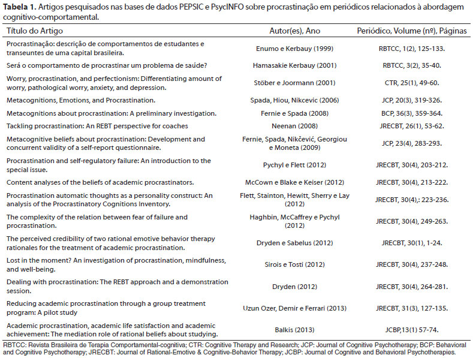
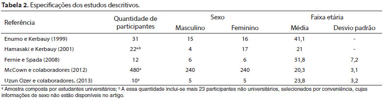
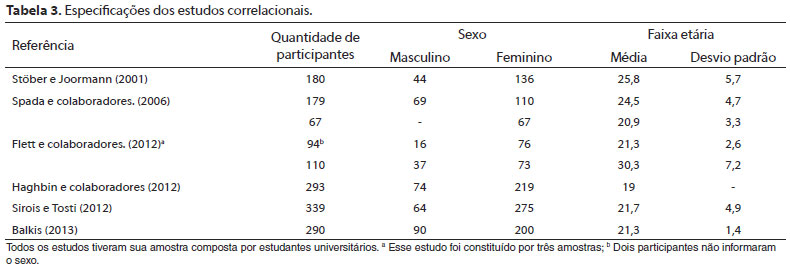
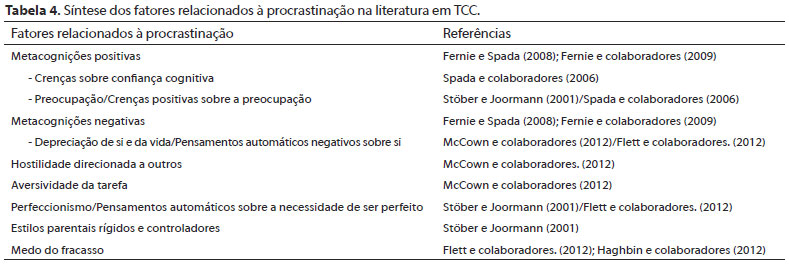
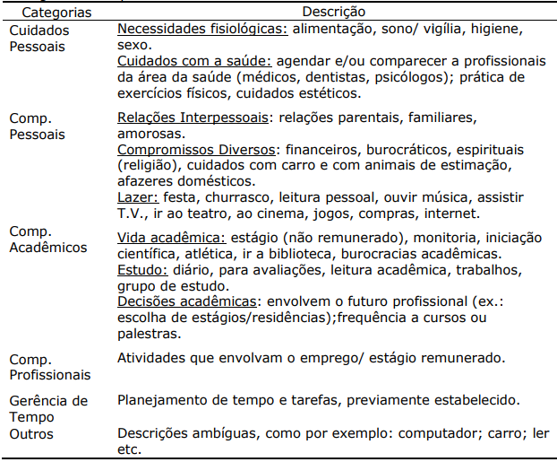
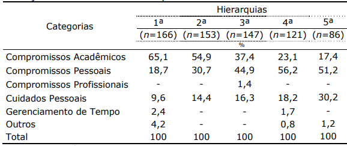
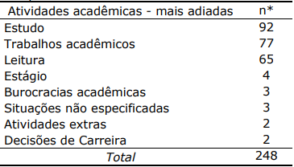
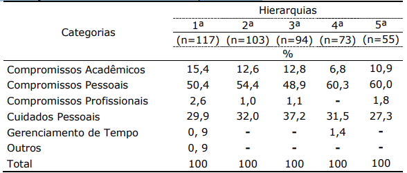
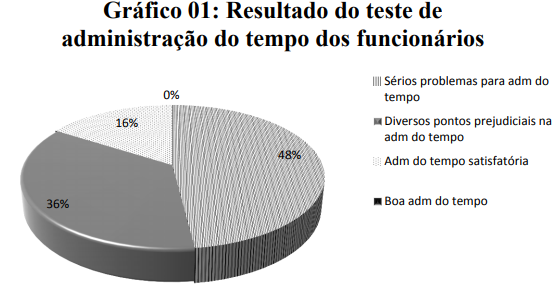
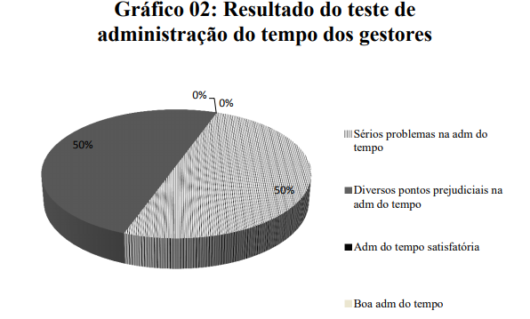

Procrastinação e terapia cognitivo-comportamental: uma revisão integrativa
Resumo
A procrastinação diz respeito ao atraso de tarefas e decisões comumente associada a um sofrimento psicológico significativo. É um comportamento prevalente e considerado complexo por envolver componentes cognitivos, emocionais e comportamentais que fornecem ao procrastinador um conforto temporário diante de uma tarefa aversiva. Visto que a terapia cognitivo-comportamental (TCC) dá prioridade à modificação de crenças para produzir mudanças nos comportamentos, este estudo teórico realizou uma revisão integrativa da literatura nacional e internacional em TCC sobre procrastinação com o intuito oferecer um panorama atual dos estudos acerca da procrastinação na abordagem cognitivo-comportamental. A revisão foi realizada nas bases PsycINFO e PEPSIC a partir do descritor procrastinação, dos seus derivados e dos correspondentes em inglês e espanhol. A partir dos critérios de inclusão/exclusão, foram recuperados 16 artigos publicados em periódicos no período de 1999 a 2013. A revisão indicou um interesse escasso, embora crescente, sobre o tema, revelando fatores relacionados à procrastinação, como as metacognições, que podem fornecer importantes subsídios para o tratamento de procrastinadores crônicos. Sugere-se que pesquisas futuras diversifiquem a amostra de participantes, a fim de estudar a procrastinação entre outras populações e não somente entre universitários.
Procrastinação acadêmica: um estudo exploratório.
Resumo
A procrastinação acadêmica pode ser compreendida como um fenômeno dinâmico, que envolve aspectos pessoais, comportamentais e ambientais e se caracteriza pelo adiamento não estratégico de ações. Esse comportamento pode prejudicar o desempenho acadêmico estudante. O presente estudo objetivou explorar e descrever a procrastinação entre os estudantes universitários, bem como identificar as atividades mais e menos adiadas e os sentimentos relatados ao se procrastinar. Os resultados indicam a frequência da procrastinação entre os universitários, bem como uma relação de tarefas acadêmicas adiadas e de sentimentos desagradáveis ao procrastinar.
A Arte de Procrastinar
Resumo
As empresas buscam a excelência, a eficácia e rapidez em seus colaboradores
visando resultados satisfatórios. A procrastinação consiste em atrasar ou adiar
sistematicamente a realização de atividades relevantes, podendo acontecer em situações e em
contextos variados (RIBEIRO ET AL., 2014). Diante disto, o presente estudo pretendeu
ampliar o conhecimento sobre o ato de procrastinar, buscando compreender quais os motivos
e consequências deste comportamento, na visão do colaborador e do gestor. Optou-se por uma
pesquisa quali-quanti, de caráter exploratório. Os resultados deixaram claro uma dificuldade
em gerir o tempo. Grande parte dos funcionários (48%) demonstraram sérios problemas para
administrar o tempo, e outros 36% possuem diversos pontos prejudiciais na administração do
tempo. Os resultados dos gestores, não se mostraram diferentes. O excesso de trabalho
aparece como principal causador da procrastinação. Junta-se a este, a “falta de tempo”,
seguida da necessidade de optar por atividades mais importantes, deixando outras de lado, e o
surgimento de novas tarefas. A maior consequência da procrastinação foi o acúmulo e
sobrecarga de trabalho, sendo esta uma consequência, que se liga fortemente ao motivo
trazido anteriormente. Este acúmulo leva a atrasos, esquecimentos e ao estresse. Todos
procrastinam em algum momento de suas vidas, portanto, aceitar que o deixar para depois
está mais presente do que se queira admitir é um primeiro passo, e buscar compreender este
processo, se faz necessário.
A procrastinação acadêmica pode ser compreendida como um fenômeno dinâmico, que envolve aspectos pessoais, comportamentais e ambientais e se caracteriza pelo adiamento não estratégico de ações. Esse comportamento pode prejudicar o desempenho acadêmico estudante. O presente estudo objetivou explorar e descrever a procrastinação entre os estudantes universitários, bem como identificar as atividades mais e menos adiadas e os sentimentos relatados ao se procrastinar. Os resultados indicam a frequência da procrastinação entre os universitários, bem como uma relação de tarefas acadêmicas adiadas e de sentimentos desagradáveis ao procrastinar.
A Arte de Procrastinar
Resumo
As empresas buscam a excelência, a eficácia e rapidez em seus colaboradores
visando resultados satisfatórios. A procrastinação consiste em atrasar ou adiar
sistematicamente a realização de atividades relevantes, podendo acontecer em situações e em
contextos variados (RIBEIRO ET AL., 2014). Diante disto, o presente estudo pretendeu
ampliar o conhecimento sobre o ato de procrastinar, buscando compreender quais os motivos
e consequências deste comportamento, na visão do colaborador e do gestor. Optou-se por uma
pesquisa quali-quanti, de caráter exploratório. Os resultados deixaram claro uma dificuldade
em gerir o tempo. Grande parte dos funcionários (48%) demonstraram sérios problemas para
administrar o tempo, e outros 36% possuem diversos pontos prejudiciais na administração do
tempo. Os resultados dos gestores, não se mostraram diferentes. O excesso de trabalho
aparece como principal causador da procrastinação. Junta-se a este, a “falta de tempo”,
seguida da necessidade de optar por atividades mais importantes, deixando outras de lado, e o
surgimento de novas tarefas. A maior consequência da procrastinação foi o acúmulo e
sobrecarga de trabalho, sendo esta uma consequência, que se liga fortemente ao motivo
trazido anteriormente. Este acúmulo leva a atrasos, esquecimentos e ao estresse. Todos
procrastinam em algum momento de suas vidas, portanto, aceitar que o deixar para depois
está mais presente do que se queira admitir é um primeiro passo, e buscar compreender este
processo, se faz necessário.
Procrastinação e terapia cognitivo-comportamental: uma revisão integrativa
Fernanda de Souza BritoI; Daniela Di Giorgio Schneider BakosII
IEspecialista em TCC pela WP - Centro de Psicoterapias Cognitivo-comportamentais e Mestre em Psicologia Social e do Trabalho pela Universidade Federal da Bahia - Professora - Salvador - BA - Brasil
IIDoutorado em Psicologia do Desenvolvimento (2008) pela Universidade Federal do Rio Grande do Sul (UFRGS). Especialista em Psicoterapias Cognitivo
- comportamentais pela Unisinos (2004). Professora e supervisora do Instituto da Família de Porto Alegre (INFAPA) e professora convidada da WP - Centro de Psicoterapias Cognitivo-comportamentais .
Resumo
A procrastinação diz respeito ao atraso de tarefas e decisões comumente associada a um
sofrimento psicológico significativo. É um comportamento prevalente e considerado complexo por envolver componentes cognitivos, emocionais e comportamentais que fornecem
ao procrastinador um conforto temporário diante de uma tarefa aversiva. Visto que a terapia cognitivo-comportamental (TCC) dá prioridade à modificação de crenças para produzir
mudanças nos comportamentos, este estudo teórico realizou uma revisão integrativa da
literatura nacional e internacional em TCC sobre procrastinação com o intuito oferecer um
panorama atual dos estudos acerca da procrastinação na abordagem cognitivo-comportamental. A revisão foi realizada nas bases PsycINFO e PEPSIC a partir do descritor procrastinação, dos seus derivados e dos correspondentes em inglês e espanhol. A partir dos critérios
de inclusão/exclusão, foram recuperados 16 artigos publicados em periódicos no período de
1999 a 2013. A revisão indicou um interesse escasso, embora crescente, sobre o tema, revelando fatores relacionados à procrastinação, como as metacognições, que podem fornecer
importantes subsídios para o tratamento de procrastinadores crônicos. Sugere-se que pesquisas futuras diversifiquem a amostra de participantes, a fim de estudar a procrastinação
entre outras populações e não somente entre universitários.
ABSTRACT
Procrastination relates to the delay of decisions and tasks commonly associated with significant psychological distress. It is a prevalent behavior and considered complex because it involves cognitive,
emotional and behavioral components that provide the procrastinator temporary comfort front of an aversive task. Cognitive behavioral therapy (CBT) emphasizes the modification of beliefs to produce changes in behavior, so this theoretical study conducted an integrative review of national and international literature on CBT about procrastination in order to provide a current overview of studies in the cognitive behavioral approach. The review was conducted in the PsycINFO and PEPSIC databases from the descriptor procrastination, its derivatives and correspondences in English and Spanish. Using the inclusion/exclusion criteria, sixteen journal articles were retrieved from the period 1999-2013. Review indicated a scarce but growing interest in the topic, revealing factors related to procrastination, as metacognitions,which can provide important insights for the treatment of chronic procrastinators. It is suggested that future research diversify the sample of participants in order to study procrastination among other populations and not only in the university.
A procrastinação refere-se ao atraso desnecessário e
irracional de uma tarefa ou tomada de decisão acompanhado
de desconforto psicológico e emoções negativas, como culpa
e insatisfação (Basco, 2010; Ellis & Knaus, 1977; Haghbin,
McCaffrey, & Pychyl, 2012). Trata-se de um comportamento
comum e prevalente que pode gerar prejuízos significativos na
qualidade de vida das pessoas.
Em geral, esses comportamentos tendem a ser mais
estudados durante a vida estudantil, na qual por volta de 80%
dos estudantes procrastinam e, destes, 50% têm prejuízos
significativos devido a essa condição (Dryden & Sabelus, 2012;
Enumo & Kerbauy, 1999). Na vida adulta, as pessoas procrastinam
em tarefas rotineiras como marcar exames médicos (Hamasaki
& Kerbauy, 2001), e pesquisadores têm apontado um aumento
desse comportamento na população geral, indicando que a
procrastinação afeta cronicamente 15 a 20% dos indivíduos adultos
(Harriott & Ferrari, 1996; Kachgal, Hansen, & Nutter, 2001).
O comportamento procrastinatório é considerado
relativamente difícil de ser modificado porque fornece um
conforto temporário em um mundo cheio de demandas,
incertezas e responsabilidades, sendo utilizado como estratégia
de enfrentamento diante de tarefas aversivas (Basco, 2010).
Diversas razões para esse comportamento são apresentadas por
Basco (2010) com base em sua observação clínica de terapeuta
cognitivo-comportamental: pode existir uma preocupação
excessiva das pessoas com a própria capacidade de fazer
as coisas corretamente; outras atrasam tarefas porque não
querem ter de realizá-las; e ainda há aquelas que procrastinam
porque não são organizadas e simplesmente não sabem por
onde começar. De acordo com a autora, o motivo subjacente
à evitação define diferentes tipos de procrastinadores (p. ex., o
tipo inseguro evita a tarefa predominantemente por insegurança
quanto às próprias habilidades). Ellis e Knaus (1997), também
apoiados na abordagem cognitiva (especificamente na
terapia racional emotiva), relacionaram a procrastinação aos
medos irracionais do fracasso centrados na autocrítica e na
insegurança sobre suas habilidades.
Por meio de uma metanálise, Steel (2007) revisou
estudos empíricos que revelaram preditores fortes e
consistentes da procrastinação, como a aversividade da tarefa,
a baixa autoeficácia, a impulsividade e algumas facetas da
conscienciosidade (baixo autocontrole e organização e elevada
distratibilidade). Pychyl, Coplan e Reid (2002) revelaram também
o papel do perfeccionismo, da intolerância à frustração e do
autoperdão sobre os comportamentos procrastinatórios. Além
disso, a procrastinação pode ter relação com estilos parentais
rígidos e controladores na medida em que expectativas
elevadas e críticas dos pais têm sido associadas, na literatura, a
uma forma de perfeccionismo que está positivamente associada
à procrastinação (Frost, Lahart, & Rosenblate, 1991; Pychyl et
al., 2002).
Considerando o resultado das observações clínicas e dos
estudos empíricos sobre o tema, é possível perceber que crenças
sobre si e sobre a tarefa estão relacionadas à dificuldade de modificar
os comportamentos procrastinatórios. Nesse sentido, o objetivo
deste estudo teórico é compreender como a procrastinação tem
sido estudada pela literatura em terapia cognitivo-comportamental
(TCC), visto que essa abordagem dá prioridade a modificar crenças
para produzir mudanças nos comportamentos. MÉTODO
Trata-se de uma revisão integrativa da literatura, que
se caracteriza por ser uma metodologia ampla de síntese
do conhecimento e aplicabilidade prática dos resultados de
diferentes tipos de estudos: experimentais, não experimentais e
dados de literatura teórica e empírica (Souza, Silva, & Carvalho,
2010). A presente revisão integrativa tem como objetivo responder
à seguinte questão: como a procrastinação tem sido estudada
no âmbito da abordagem cognitivo-comportamental? Para
tanto, foram consultadas as seguintes bases de dados: o portal
de Periódicos Eletrônicos de Psicologia - PEPSIC, vinculado
à BVS-Psi ULAPSI (Biblioteca Virtual em Saúde-Psicologia
da União Latino-americana de Entidades de Psicologia), e a
PsycINFO, vinculada à Associação Americana de Psicologia.
Após a delimitação da questão de pesquisa, as demais etapas
da revisão integrativa estão descritas a seguir.
Para operacionalizar a busca nas bases de dados
foram utilizados o descritor (termo de busca) procrastinação,
os seus derivados e os correspondentes em inglês e espanhol.
O primeiro critério de inclusão adotado foi haver o descritor
no título do trabalho, com o intuito de garantir a seleção de
estudos que tivessem a procrastinação como foco principal. O
segundo critério de inclusão contemplou a seleção de trabalhos
de texto completo exclusivamente relacionados à abordagem
cognitivo-comportamental: somente foram incluídos estudos
de periódicos que tinham no título o termo cognitivo, os seus
derivados e os correspondentes em inglês e espanhol.
Em termos de extensão temporal da busca, foram
selecionados estudos publicados entre 1999 e 2013. Quanto ao
idioma da publicação, a busca restringiu-se aos trabalhos publicados
nos idiomas português, inglês e espanhol. Não foram considerados
teses, dissertações, livros e capítulos de livros. Foram selecionados
16 artigos, dois dos quais eram nacionais, e 14, internacionais,
escritos em inglês. Não foram encontrados artigos em espanhol.
Após a seleção e a leitura dos trabalhos de acordo com
os critérios de inclusão e exclusão, construiu-se um banco
de dados para organizar os artigos com o intuito de destacar
seus principais atributos: base de dados, título, autor(es), ano
de publicação, tipo de estudo e quantidade de participantes,
considerando sexo e faixa etária. O banco de dados construído
orientou a descrição, a análise e a interpretação dos resultados,
que serão apresentados na seção seguinte.
ANÁLISE DA PRODUÇÃO CIENTÍFICA SOBRE PROCRASTINAÇÃO NA ABORDAGEM COGNITIVOCOMPORTAMENTAL
Esta seção de apresentação e análise dos artigos
selecionados está organizada da seguinte forma: inicialmente se
analisou a quantidade de artigos por periódico; em seguida, o tipo
de estudo conduzido; e, por fim, buscou-se categorizar os artigos
em função do conteúdo abordado. A amostra final dessa revisão
foi composta por 16 artigos científicos selecionados de acordo com
os critérios previamente estabelecidos. A Tabela 1 apresenta as
especificações de cada artigo, sendo os dois primeiros encontrados
no banco de dados PEPSIC, e os demais, no PsycINFO.

A quantidade relativamente pequena de artigos sobre
procrastinação nos periódicos de abordagem cognitivocomportamental pode ser observada na Tabela 1 e revela uma
produção escassa sobre o tema, especialmente em nível nacional,
onde apenas dois artigos foram encontrados. O desinteresse
nacional pelo tema é corroborado pelo fato de que os artigos
nacionais foram os mais antigos dentre os selecionados (Enumo
& Kerbauy, 1999; Hamasaki & Kerbauy, 2001).
Sabe-se que muitos manuais de tratamento cognitivocomportamental têm sido escritos, com frequência, para categorias
de diagnóstico cada vez mais específicas, e, de acordo com D.
Dobson e K. S Dobson (2010), esses manuais são desenvolvidos
de maneira rigorosa e testados em clientes cuidadosamente
selecionados em clínicas especializadas. Obviamente, a TCC é
útil para uma ampla variedade de problemas, e não somente para
transtornos diagnosticáveis. No entanto, diante da preferência da
área pelo estudo e o desenvolvimento de protocolos específicos
para esses transtornos, não é coincidência o número reduzido de
artigos sobre procrastinação, já que esse é um problema que não
perfaz um transtorno em si e pode estar associado a questões
caracterológicas ou de personalidade.
Lay (1997) complementa essa ideia afirmando que a
procrastinação sob a perspectiva da personalidade pode ser
definida como uma escassez de conscienciosidade (traço que
inclui características como autodisciplina, cumprimento de
deveres e determinação). Pychyl e Flett (2012) retomam a questão
da preferência da TCC por estudos relacionados a diagnósticos
e afirmam que os traços relacionados à procrastinação têm sido
estudados no âmbito dos transtornos da personalidade, mas
que há muito a ser aprendido no que se refere às diferenças
individuais quanto à tendência a procrastinar.
Do total de publicações encontradas, o Journal of RationalEmotive Cognitive-Behavior Therapy (JRECBT) é responsável por
nove artigos, sendo que seis deles fizeram parte de uma edição
especial sobre a procrastinação, publicada em dezembro de 2012.
Esse periódico especifica em seu título uma abordagem em TCC,
denominada terapia racional emotiva, desenvolvida por Albert Ellis,
sendo assim, é esperado que tenha uma maior quantidade de
publicações sobre o tema do que os demais, uma vez que Albert
Ellis, juntamente com Knaus, iniciou o estudo da procrastinação
na literatura em TCC com o seminal trabalho “Superando a
procrastinação” (Overcoming Procrastination), de 1977.
Os artigos selecionados foram classificados como
teóricos ou empíricos. Os três artigos teóricos pertencem ao
JRECBT e foram ilustrados com a apresentação de casos clínicos
tratados a partir da terapia racional emotiva. O primeiro artigo
a ser analisado é o prefácio da edição especial do JRECBT,
escrito por Pychyl e Flett (2012), que trata a procrastinação
como um tipo de fracasso autorregulatório relacionado a
características de personalidade, com impacto significativo na
vida do procrastinador e das pessoas ao seu redor. Em geral, a
literatura mais abrangente sobre o tema corrobora essa visão de
que a procrastinação é resultado de um fracasso autorregulatório:
um fracasso na capacidade das pessoas em regularem seus
pensamentos, emoções e comportamentos (Steel, 2007).
Os artigos teóricos de Neenan (2008) e Drydens (2012)
buscaram aplicar os princípios dessa abordagem terapêutica para
tratar a procrastinação, enfatizando a importância de conscientizarse da procrastinação, de substituí-la por engajamento na tarefa por
meio da identificação e da modificação de crenças procrastinatórias
irracionais e, principalmente, de tolerar o desconforto de curto
prazo a fim de obter ganhos de longo prazo. No entanto, o mais
antigo, publicado em 2008 por Neenan, aplica e sistematiza esses
princípios ao treinamento para desenvolvimento profissional
(coaching), sendo mais inovador, visto que a procrastinação é
altamente relacionada às questões acadêmicas, em especial
às dificuldades do indivíduo jovem na adaptação aos deveres
do ambiente universitário, e muito pouco explorada em outros
domínios da vida adulta (Klingsieck, 2013).
No que diz respeito aos artigos empíricos, foram encontrados
cinco artigos de caráter descritivo (Enumo & Kerbauy, 1999; Fernie &
Spada, 2008; Hamasaki & Kerbauy, 2001; McCown, Blake, & Keiser,
2012; Uzun Ozer, Demir, & Ferrari, 2013), cinco correlacionais (Flett
et al., 2012; Haghbin et al., 2012; Sirois & Tosti, 2012; Spada et al.,
2006; Stöber e Joormann, 2001), um com desenho experimental
(Dryden & Sabelus, 2012), e por fim, um específico sobre validação
de instrumento (Fernie et al., 2009). As especificações dos estudos
descritivos podem ser observadas na Tabela 2.

Observe na Tabela 2 que, em geral, a amostra dos
estudos descritivos foi composta por universitários, com
proporção relativamente equilibrada entre homens e mulheres.
Em sua maioria, os estudos apresentaram uma faixa etária
correspondente a uma população jovem adulta. Esse fato é
bastante coerente, visto que é esperado que a procrastinação
tenha um efeito mais nocivo para esse público, pois é quando
os projetos profissionais começam a ser delineados e as
demandas sociais exercem maior pressão sobre os indivíduos.
Os estudos descritivos diferenciaram-se no grau de
utilização do referencial teórico das abordagens cognitivas. Por
exemplo, enquanto, em seus artigos, Enumo e Kerbauy (1999) e
Hamasaki e Kerbauy (2001) buscaram descrever razões ou opiniões
dos participantes sobre a procrastinação e explorar que tipo de
tarefas as pessoas costumam adiar de modo mais amplo, Fernie
e Spada (2008) e McCown e colaboradores (2012) fizeram isso de
maneira mais específica utilizando construtos teóricos como crenças
e metacognições procrastinatórias. Nesse sentido, os primeiros
artigos, por serem nacionais, contribuem para entender o fenômeno
da procrastinação entre brasileiros, em especial o de Hamasaki
e Kerbauy (2001), que enfatiza o impacto da procrastinação na
prevenção da saúde; já os últimos revelam aspectos cognitivos
fundamentais relacionados à procrastinação em si.
Fernie e Spada (2008), ao descreverem crenças
metacognitivas (informações que os indivíduos mantêm sobre
suas cognições e sobre as estratégias de enfrentamento para
lidar com elas), encontraram que metacognições positivas (“adiar
tarefas permite fazê-las depois com mais criatividade”) e negativas
(“adiar tarefas produz sentimentos ruins o tempo todo”) estão
relacionadas à procrastinação e têm como meta regular cognições
e afetos negativos. Esse estudo selecionou indivíduos com
elevados escores em procrastinação, de acordo com escalas de
procrastinação geral e procrastinação decisional, que participaram
do estudo quantitativo de Spada e colaboradores (2006).
Dentre os estudos descritivos encontrados, o de McCown
e colaboradores (2012) foi o único com desenho comparativo.
Os autores buscaram comparar procrastinadores e não
procrastinadores utilizando um programa de computador para
análise de conteúdo e diagnóstico psiquiátrico com o intuito de
elucidar o que procrastinadores crônicos pensam e sentem quando
suas crenças são ativadas por uma situação que resulta em
adiamento da tarefa. A análise de conteúdo foi realizada com base
no preenchimento de uma redação on-line sobre pensamentos e
sentimentos no momento em que os participantes percebiam que
estavam procrastinando. Os autores encontraram que, nesses
indivíduos, a procrastinação está relacionada a afirmações
autodepreciativas, depreciação do valor, da qualidade e da
utilidade de diversos aspectos da vida, e hostilidade direcionada
a outros, bem como ao grau de aversividade da tarefa.
O quinto estudo descritivo, publicado por Uzun Ozer e
colaboradores (2013), foi o mais atual sobre o tema, e propõe uma
perspectiva grupal para o tratamento da procrastinação. O objetivo
do tratamento seguiu o foco das TCCs, que é identificar crenças
irracionais e distorções cognitivas relacionadas à procrastinação,
e obteve eficácia. Inclusive, uma das etapas consistiu em
identificar pensamentos e sentimentos associados a tipos de
procrastinadores (decisional, evitativo e hedônico), indicando que
categorizar estilos de procrastinação pode ser útil no tratamento,
apesar de existirem evidências empíricas na literatura mais ampla
que não sustentam essa distinção (Steel, 2010).
Quanto aos estudos correlacionais, todos buscaram
relações entre procrastinação e um conjunto de conceitos, como
crenças, metacognições, pensamentos automáticos, medo do
fracasso e perfeccionismo, na tentativa de compreender o impacto
dessas relações sobre diversas formas de sofrimento psicológico.
As especificações dos seis estudos correlacionais encontrados
são apresentadas na Tabela 3 e descritos a seguir, considerando
a ordem cronológica e/ou aproximação dos conteúdos abordados.

Os estudos correlacionais, em comparação aos
descritivos, envolvem uma quantidade mais elevada de
participantes, o que viabiliza a condução das análises estatísticas
correspondentes ao escopo de cada estudo. Na Tabela 3
também se observa uma predominância de participantes do sexo
feminino, em sua maioria no início da vida adulta.
Sabe-se que a preocupação é fonte de sofrimento e
angústia significativos, sendo esse o foco do estudo de Stöber
e Joormann (2001). Os autores concluíram que a procrastinação
e o perfeccionismo relacionam-se a quanto uma pessoa se
preocupa (independentemente de como ela se sente, ansiosa
ou deprimida, sobre a sua preocupação). Logo, a preocupação
do perfeccionista sobre erros e dúvidas pode ser responsável
pela procrastinação. Além disso, a preocupação relacionouse com expectativas e críticas dos pais, corroborando
descobertas da literatura mais ampla sobre a procrastinação
(Frost et al., 1991; Pychyl et al., 2002). No entanto, Spada e
colaboradores (2006) chegaram a um resultado complementar
trabalhando com o conceito de metacognição: ela contribui
para a procrastinação independentemente das emoções
negativas (ansiedade e depressão). Dentre as metacognições
pesquisadas, cabe destacar crenças sobre confiança cognitiva e
crenças positivas sobre preocupação: quanto mais uma pessoa
confia nas próprias cognições e se preocupa com uma decisão,
considerando que a preocupação ajuda a enfrentar dificuldades,
mais ela tende a procrastinar.
Flett e colaboradores (2012) também investigaram as
cognições procrastinatórias controlando traços de personalidade
que têm relação com o adiamento de tarefas ou decisões,
como o elevado neuroticismo e a baixa conscienciosidade.
Os autores, ao isolarem esses traços, concluíram que as
cognições procrastinatórias obtiveram poder preditivo sobre
estresse e sofrimento psicológico. Em geral, essas cognições
refletiam pensamentos automáticos negativos sobre si e sobre a
necessidade de ser perfeito e o medo do fracasso. Na literatura
sobre procrastinação, o medo do fracasso é considerado
bastante importante. Haghbin e colaboradores (2012)
investigaram sua relação com a procrastinação e constataram
que a competência percebida pela pessoa é um importante
moderador dessa associação. Desse modo, o procrastinador
teme o fracasso, percebe não ter competência para lidar com
isso sozinho e, então, evita a tarefa.
Dentre os estudos correlacionais, o de Sirois e Tosti
(2012) propôs especificamente uma abordagem terapêutica da
TCC a partir do estudo das associações entre procrastinação,
atenção plena (mindfulness) e bem-estar. Os autores concluíram
que, para procrastinadores, a baixa atenção plena pode ser
um fator de risco para baixo bem-estar físico e emocional.
Nesse sentido, propõem que abordagens que incidem sobre a
aceitação de estados e pensamentos desagradáveis podem ser
benéficas para reduzir o estresse relacionado à procrastinação.
A TCC baseada em atenção plena (mindfulness) em particular
é conhecida por promover uma maior consciência dos
pensamentos e dos sentimentos difíceis, reduzir o estresse,
aumentar a persistência em tarefas e melhorar a saúde.
Para finalizar os estudos correlacionais encontrados
nessa revisão, temos o recente estudo de Balkis (2013), que teve
o objetivo de analisar relações entre procrastinação acadêmica,
crenças racionais sobre estudar, satisfação e realização
acadêmica. Conforme esperado, a procrastinação acadêmica se
correlacionou negativamente com as demais variáveis. Por meio
da modelagem de equações estruturais, o autor constatou o
papel mediador das crenças racionais sobre estudar na relação
entre procrastinação, satisfação e realização acadêmica.
Esse resultado apoia a premissa básica das abordagens
cognitivo-comportamentais de que nossas crenças medeiam
nossas emoções e comportamentos tanto funcionais como
disfuncionais. Logo, quando modificamos crenças irracionais
e acentuamos crenças racionais, aprendemos estratégias mais
adaptativas para enfrentar os eventos estressantes da vida.
O penúltimo artigo analisado nessa revisão tem como
foco o tratamento da procrastinação, sendo o único com
desenho experimental. O estudo de Dryden e Sabelus (2012)
avaliou a percepção de credibilidade de duas versões da terapia
comportamental racional emotiva para tratar a procrastinação
acadêmica. O desenho experimental foi do tipo 2 (terapia
específica focada na mudança de crenças irracionais ou geral
envolvendo orientação para metas, gerenciamento de emoções
negativas e do tempo e outros aspectos, como melhoria do
ambiente de trabalho) x 2 (tratamento com ou sem status empírico)
x 2 (terapeuta experiente para tratar procrastinação ou não),
resultando em oito condições para as quais os participantes foram
alocados aleatoriamente. Participaram desse estudo 96 estudantes
universitários (49 do sexo masculino e 47 do sexo feminino),
com média de idade de 25,7 anos (desvio padrão: 7,4 anos). Os
resultados indicaram relações significativas entre experiência
do terapeuta e suporte empírico do tratamento em participantes
alocados na condição da terapia específica. De modo geral, os
autores concluíram o estudo enfatizando a importância da acurácia
das informações oferecidas no pré-tratamento.
No tratamento da procrastinação, Fernie e colaboradores
(2009) consideraram a necessidade de facilitar a avaliação clínica
e a formulação do caso por meio de medidas ou instrumentos
específicos. Para tanto, desenvolveram e validaram um
questionário de crenças metacognitivas sobre a procrastinação.
O questionário tem bons índices de consistência interna, e a
análise fatorial apontou a existência de dois fatores: crenças
metacognitivas positivas e negativas. As metacognições positivas
apresentaram correlação significativa com adiar decisões. Por
exemplo: procrastinar impede de tomar decisões ruins quando se
está ansioso. E as metacognições negativas se correlacionaram
com o adiamento de decisões e tarefas, ou seja, procrastinar é
estressante e ruim, pois, quando se adiam tarefas ou decisões, se
desperdiça muito tempo pensando naquilo que se está evitando.
Diante dessa revisão, foi possível observar que os
estudos sobre procrastinação encontrados na literatura em TCC
são diversificados em termos de metodologia e condizem com
a literatura mais ampla sobre o tema. Em relação ao conteúdo
dos artigos, três categorias se destacaram: o impacto da
procrastinação em aspectos relacionados à qualidade de vida
das pessoas (ansiedade, depressão, bem-estar); a preocupação
em como tratar a procrastinação; e, por fim, a busca por
uma compreensão de fatores relacionados à procrastinação.
Nesta última categoria, os principais fatores relacionados
à procrastinação encontrados nessa revisão referente à
abordagem cognitivo-comportamental foram sistematizados
na Tabela 4.

CONSIDERAÇÕES FINAIS
A revisão da literatura em TCC sobre procrastinação
apresentou coerência com pesquisas em outras áreas, em
especial por considerá-la um fracasso na capacidade de
regular as cognições, as emoções e os comportamentos. Nesse
sentido, questionam-se estudos que percebem e investigam
a procrastinação como algo positivo, afirmando que não agir
pode ser uma forma produtiva de refletir melhor sobre a tarefa,
ou que trabalhar sob pressão de tempo pode representar
trabalhar melhor, mais rápido e com mais criatividade (Chun
Chu & Choi, 2005). Diante da revisão realizada, esses
argumentos aproximam-se às metacognições positivas sobre
a procrastinação, que tendem a aumentar a sua frequência,
tornando-a mais resistente à mudança. Postergar uma tarefa ou
decisão adotando um comportamento procrastinatório significa
que o atraso é irracional e percebido pelas pessoas como
prejudicial. Logo, esse estudo corrobora que a procrastinação
tem consequências negativas para a qualidade de vida das
pessoas.
A maioria dos artigos analisados nesta revisão enfatizou
a procrastinação acadêmica ou estudou a procrastinação entre
universitários, o que é, sem dúvida, relevante, já que estratégias
e programas de aconselhamento e tratamento podem ser
implementados para essa população e inúmeros prejuízos da
procrastinação podem ser evitados na vida dos universitários,
futuros profissionais. No entanto, mesmo que a pesquisa sobre o
impacto da procrastinação no desenvolvimento profissional das
pessoas se mantenha, será que a procrastinação ocorre da mesma
maneira entre universitários e trabalhadores? Assim, é importante
que pesquisas futuras reflitam sobre uma maior diversidade da
amostra, ampliando as pesquisas para outros públicos, como
trabalhadores, ou, no âmbito da terapia cognitivo-comportamental,
por exemplo, sobre o quanto os clientes procrastinam a busca por
auxílio psicológico e sobre qual o impacto disso no tratamento.
Lidar com a procrastinação foi um conteúdo que se
destacou entre os artigos pesquisados, e diferentes abordagens
terapêuticas em TCC têm se interessado pelo tema, como é
o caso da terapia racional emotiva e da terapia de atenção
plena (mindfulness). Isso pode ocorrer em função de alguns
estudos apresentarem eficácia limitada da TCC tradicional
para a procrastinação, já que esta prioriza o papel das crenças
negativas sobre si mesmo na manutenção da procrastinação,
dando, assim, menor ênfase às crenças que podem afetar e
controlar o processamento cognitivo de procrastinadores (as
metacognições) (Fernie et al., 2009; Spada et al., 2006).
Outras abordagens em TCC também podem ser úteis
tanto para auxiliar a formulação do caso como para o tratamento
em si dos procrastinadores, como a terapia do esquema,
proposta por Jeffrey Young (Young, Klosko, & Weishaar, 2008).
Na primeira situação, entender qual esquema desadaptativo
está associado à procrastinação pode ajudar a visualizar os
funcionamentos cognitivo, emocional e comportamental do
paciente. Em seguida, o tratamento baseado em esquemas
pode ser útil por agregar técnicas experienciais e interpessoais
às cognitivo-comportamentais, enfatizando uma confrontação
mais ativa de padrões rígidos de funcionamento (McGinn &
Young, 1996).
Por fim, a procrastinação é um comportamento
que tem prevalência relativamente alta em alguns países,
no entanto, estudos brasileiros sobre o tema são escassos.
Compreender como a procrastinação ocorre entre brasileiros
pode ser promissor; inclusive, Hamasaki e Kerbauy (2001)
encontraram, entre as justificativas para adiar tarefas, o fato
de ser brasileiro. Logo, a procrastinação seria uma estratégia
valorizada pelos brasileiros? Estudos que enfatizem o poder
da cultura sobre a procrastinação podem produzir resultados
igualmente interessantes.
REFERÊNCIAS
Balkis, M. (2013). Academic procrastination, academic life satisfaction
and academic achievement: The mediation role of rational beliefs
about studying. Journal of Cognitive and Behavioral Psychotherapies,
13(1), 57-74.
Basco, M. R. (2010). The procrastinator`s guide to getting things done.
New York: Guilford.
Chun Chu, A. H., & Choi, J. N. (2005). Rethinking procrastination: Positive
effects of “active” procrastination behavior on attitudes and
performance. The Journal of Social Psychology, 145(3), 245-264.
DOI: http://dx.doi.org/10.3200/SOCP.145.3.245-264
Dobson D., & Dobson K.S. (2010). Introdução e contexto das intervenções
cognitivo-comportamentais. In D. Dobson, & K. S. Dobson, A terapia
cognitivo-comportamental baseada em evidências (pp. 11-19). Porto
Alegre: Artmed.
Dryden, W., & Sabelus, S. (2012). The perceived credibility of two rational
emotive behavior therapy rationales for the treatment of academic
procrastination. Journal of Rational-Emotive and Cognitive Behavior
Therapy, 30, 1–24. DOI: http://dx.doi.org/10.1007/s10942-010-
0123-z
Dryden, W. (2012). Dealing with procrastination: The REBT approach and
a demonstration session. Journal of Rational-Emotive and CognitiveBehavior Therapy. 30(4), 264-281. DOI: http://dx.doi.org/10.1007/
s10942-012-0152-x
Ellis, A., & Knaus, W. (1977). Overcoming procrastination. New York:
Institute for Rational Living.
Enumo, S. F., & Kerbauy, R. R.(1999). Procrastinação: descrição de
comportamento de estudantes e transeuntes de uma capital
brasileira. Revista Brasileira de Terapia Comportamental e Cognitiva,
1(2), 125-133.
Fernie, B. A., & Spada, M. M. (2008). Metacognitions about procrastination:
a preliminary investigation. Behavioural and Cognitive Psychotherapy,
36(3), 359-364 DOI: http://dx.doi.org/10.1017/S135246580800413X
Fernie, B.A., Spada, M.M., Nikcevic, A.V., Georgiou, G.A., & Moneta, G.B.
(2009) Metacognitive beliefs about procrastination: development
and concurrent validity of a self-report questionnaire. Journal
of Cognitive Psychotherapy, 23(4), 283-293. DOI: http://dx.doi.
org/10.1891/0889-8391.23.4.283
Flett, G. L., Stainton, M., Hewitt, P. L., Sherry, S. B., & Lay, C. (2012).
Procrastination automatic thoughts as a personality construct: An
analysis of the Procrastinatory Cognitions Inventory. Journal of
Rational-Emotive and Cognitive-Behavior Therapy. 30(4), 223-236.
DOI: http://dx.doi.org/10.1007/s10942-012-0150-z
Frost, R., Lahart, C., & Rosenblate, R. (1991). The development of
perfectionism: A study of daughters and their parents. Cognitive Therapy
and Research, 15, 469-490. DOI: http://dx.doi.org/10.1007/BF01175730
Haghbin, M., McCaffrey, A., & Pychyl, T. A. (2012). The complexity of
the relation between fear of failure and procrastination. Journal of
Rational-Emotive and Cognitive-Behavior Therapy, 30(4), 249-263.
DOI: http://dx.doi.org/10.1007/s10942-012-0153-9
Hamasaki, E. I. M., & Kerbauy, R. R. (2001). Será o comportamento de
procrastinar um problema de saúde? Revista Brasileira de Terapia
Comportamental e Cognitiva, 3(2), 35-40.
Harrington, N. (2005). It’s too difficult! Frustration intolerance beliefs and
procrastination. Personality and Individual Differences, 39, 873–883.
Harriott, J., & Ferrari, J. R. (1996). Prevalence of procrastination among
samples of adults. Psychological Reports, 78, 611–616. DOI: http://
dx.doi.org/10.2466/pr0.1996.78.2.611
Kachgal, M. M., Hansen, L. S., & Nutter, K. J. (2001). Academic
procrastination prevention/intervention: Strategies and
recommendations. Journal of Developmental Education, 25, 14–24.
Klingsieck, K. B. (2013) Procrastination: When good things don’t come to
those who wait. European Psychologist, 18(1), 24-34. DOI: http://
dx.doi.org/10.1027/1016-9040/a000138
Lay, C. H. (1997). Explaining lower-order traits through higher-order
factors: The case of trait procrastination, conscientiousness,
and the specificity dilemma. European Journal of Personality,
11(4), 267–278. DOI: http://dx.doi.org/10.1002/(SICI)1099-
0984(199711)11:4< 267::AID-PER281>3.0.CO;2-P
McCown, B., Blake, I. K., & Keiser, R. (2012). Content analyses of the
beliefs of academic procrastinators. Journal of Rational-Emotive
and Cognitive-Behavior Therapy, 30(4), 213-222. DOI: http://dx.doi.
org/10.1007/s10942-012-0148-6
McGinn, L. K., & Young, J. E. (1996). Schema-focused therapy (pp.182-207). In
P. M. Salkovskis (Ed.). (1996). Frontiers of cognitive therapy. Guilford Press
Neenan, M. (2008). Tackling procrastination: An REBT perspective for
coaches. Journal of Rational-Emotive and Cognitive Behavior Therapy,
26, 53-62. DOI: http://dx.doi.org/10.1007/s10942-007-0074-1
Uzun Ozer, B., Demir, A., & Ferrari, J. R. (2013). Reducing academic
procrastination through a group treatment program: A pilot study.
Journal of Rational-Emotive & Cognitive-Behavior Therapy, 31(3),
127-135. DOI: http://dx.doi.org/10.1007/s10942-013-0165-0
Pychyl, T. A., & Flett, G. L. (2012). Procrastination and self-regulatory
failure: An introduction to the special issue. Journal of RationalEmotive & Cognitive-Behavior Therapy, 30(4), 203-212. DOI:
http://dx.doi.org/10.1007/s10942-012-0149-5
Pychyl, T., Coplan, R., & Reid, P. (2002). Parenting and procrastination:
Gender differences in the relations between procrastination,
parenting style and selfworth in early adolescence. Personality and
Individual Differences, 33, 271-285. DOI: http://dx.doi.org/10.1016/
S0191-8869(01)00151-9
Sirois, F. M., & Tosti, N. (2012). Lost in the moment? An investigation of
procrastination, mindfulness and well-being. Journal of RationalEmotive and Cognitive-Behavior Therapy, 30(4), 237-248. DOI: http://
dx.doi.org/10.1007/s10942-012-0151-y
Souza, M.T., Silva, M. D., & Carvalho, R. (2010). Revisão integrativa: o que
é e como fazer. Einstein, 8(1), 102-106.
Spada, M. M., Hiou, K., & Nikcevic, A. V. (2006). Metacognitions, emotions,
and procrastination. Journal of Cognitive Psychotherapy, 20(3), 319-
326. DOI: http://dx.doi.org/10.1891/jcop.20.3.319
Steel, P. (2007). The nature of procrastination: A meta-analytic
and theoretical review of quintessential self-regulatory
failure. Psychological Bulletin, 133, 65–94. DOI: http://dx.doi.
org/10.1037/0033-2909.133.1.65
Steel, P. (2010). Arousal, avoidant and decisional procrastinators: Do they
exist? Personality and Individual Differences, 48(8), 926-934. DOI:
http://dx.doi.org/10.1016/j.paid.2010.02.025
Stöber, J., & Joormann, J. (2001). Worry, procrastination, and
perfectionism: Differentiating amount of worry, pathological worry,
anxiety, and depression. Cognitive Therapy and Research, 25(1), 49-
60. DOI: http://dx.doi.org/10.1023/A:1026474715384
Young, J., Klosko, J. S., & Weishaar, M. E. (2008). Terapia do esquema:
Guia de técnicas cognitivo-comportamentais inovadoras. Porto
Alegre: Artmed.
Procrastinação acadêmica: um estudo exploratório.
Rita Karina Nobre Sampaio
Psicóloga pela Pontifícia Universidade Católica de Campinas. Mestre em Educação pela Universidade
Estadual de Campinas (UNICAMP)
Isabel Cristina Dib Bariani
Professora da Pontifícia Universidade Católica de Campinas (PUCCAMP), Doutora pela Faculdade de
Educação da Universidade Estadual de Campinas (UNICAMP)
Resumo
A procrastinação acadêmica pode ser compreendida como um fenômeno dinâmico, que
envolve aspectos pessoais, comportamentais e ambientais e se caracteriza pelo
adiamento não estratégico de ações. Esse comportamento pode prejudicar o
desempenho acadêmico estudante. O presente estudo objetivou explorar e descrever a
procrastinação entre os estudantes universitários, bem como identificar as atividades
mais e menos adiadas e os sentimentos relatados ao se procrastinar. Os resultados
indicam a frequência da procrastinação entre os universitários, bem como uma relação
de tarefas acadêmicas adiadas e de sentimentos desagradáveis ao procrastinar.
Palavras-chave: procrastinação acadêmica, estudante universitário, psicologia
educacional.
ACADEMIC PROCRASTINATION: AN EXPLORATORY STUDY
Abstract
Academic procrastination has been understood as a dynamic phenomenon, which
involves personal, behavioral and environmental issues and is characterized by the
postponement of non-strategic actions. This behavior may affect the academic
performance of the students. The present study aimed to describe the procrastination
among university students, and identify activities that are more or less delayed and
feelings reported to be procrastinating.The results indicate the frequency of
procrastination among university students, as well as a list of academic tasks and
unpleasant feelings postponed to procrastinate. Keywords: academic procrastination, university student, educational psychology.
PROCRASTINACIÓN ACADÉMICA: UN ESTÚDIO EXPLORATORIO
Resumen
La procrastinación académica puede ser entendido como un fenómeno dinámico que
involucra una serie de factores personales, conductuales y ambientales, y se
caracteriza por el aplazamiento de la no-acciones estratégicas. Este comportamiento
puede afectar el desarrollo académico en general. El presente estudio objetivo
describir y la dilación de los estudiantes universitarios, e identificar las actividades que
son más o menos tardía y sentimientos informó de que la dilación. Los resultados
indican la frecuencia de la dilación entre los estudiantes universitarios, así como una
lista de las tareas académicas y sentimientos desagradables por procrastinar.
Palabras clave: procrastinación académica, estudiantes universitários, psicología
educacional.
INTRODUÇÃO
A palavra procrastinar tem origem latina, sendo que “pro" significa para
diante, adiante, ou em favor de, e “crastinus", quer dizer do amanhã (Burka &
Yuen, 1991). Há muitos sinônimos para esse fenômeno: adiar, diferir, tardar,
delongar, demorar, enrolar, espaçar, protrair, transferir para outro dia
(Dicionário Aurélio, 1995), portanto, deixar para depois algo que poderia ser
realizado naquele momento (Burka & Yuen, 1991). Destaca-se que a
procrastinação não é o mesmo que não fazer nada, não sendo sinônimo de ócio
(Schouwenburg, 2004; Costa, 2007). É simplesmente, realizar outras atividades
menos importantes, no lugar da pretendida (Schouwenburg, 2004). As definições
de procrastinação são variadas, porém possuem um núcleo comum, reconhecem
que deve haver transferência ou retardo de uma tarefa ou decisão (Burka &
Yuen, 1991; Schouwenburg, 2004; Steel, 2007).
As pesquisas sobre a procrastinação são relativamente recentes, sendo
iniciadas apenas na década de 80 (Schouwenburg, 2004). Ainda é possível
encontrar na literatura, muitos estudos que versam sobre a natureza da
procrastinação, com interpretações e definições diversas (Schouwenburg, 2004;
Steel, 2007). Destacam-se dois posicionamentos principais que norteiam essas
investigações, uma que entende a procrastinação como um traço da
personalidade e a outra como um comportamento (Wolters, 2003;
Schouwenburg, 2004; Steel, 2007).
Os estudos que consideram a procrastinação como um traço da
personalidade, isto é, uma disposição de apresentar uma resposta típica em
situações variadas (Schouwenburg, 2004), definem o traço de procrastinar como
a tendência de adiar aquilo que é necessário para se alcançar algum objetivo
(Lay & Brokenshire, 1997). Geralmente, as pesquisas nessa linha associam a
procrastinação com o modelo teórico dos Cinco Grandes Fatores ou Big Five, que
visa analisar a personalidade a partir de cinco fatores independentes, a saber:
neuroticismo, extroversão, franqueza, afabilidade e consciência (Lay &
Brokenshire, 1997; Schouwenburg, 2004; Steel, 2007; Somers, 2008).
Pesquisas que compreendem a procrastinação como um comportamento,
entendem que ela é dinâmica, se altera ao longo da vida, depende da interação
entre o indivíduo, a tarefa e o contexto vivido (Wolters, 2003; Schouwenburg,
2004). Além do comportamento, a procrastinação envolve aspectos ambientais,
processos motivacionais, cognitivos e metacognitivos (Costa, 2007; Steel, 2007).
O presente estudo segue essa vertente, e compreende a procrastinação como
um fenômeno que se manifesta de modo voluntário e envolve o comportamento
de transferir sistematicamente, para outro momento, ações, atitudes ou
compromissos relevantes, mesmo tendo em vista a possibilidade de ocorrer um
desempenho insatisfatório ou um resultado negativo ou ambos.
A procrastinação tende a apresentar uma distribuição normal na maioria das
amostras estudadas, assim, supõe-se que ao menos uma vez na vida as pessoas
irão procrastinar (Schouwenburg, 2004; Steel, 2007). A procrastinação pode se
dar em situações e contextos variados (Burka & Yuen, 1991). No âmbito
educacional, as investigações sobre a procrastinação buscam, por exemplo,
averiguar hábitos de estudo, aspectos motivacionais e ambientais
(Schouwenburg, 2004). A partir do resultado dessas pesquisas, muitos tipos de
intervenções comportamentais foram propostas, como técnicas para
administração do tempo, gestão de recursos e hábitos de estudo, entre outros
(Burka & Yuen, 1991; Schouwenburg, 2004).
Procrastinar no contexto educacional alude em protelar o início ou a
conclusão do curso de ação ou decisão voltada ao estudo (Schouwenburg, 2004).
Envolve o adiamento de atividades, tais como, o estudo, a execução de
trabalhos, leituras obrigatórias. Outros comportamentos frequentemente
associados à procrastinação são os atrasos constantes, a grande quantidade de
falta em aulas e a ausência em eventos acadêmicos (Beswick, Rothblum & Mann,
1988).
Grande parte dos estudos ressalta que a procrastinação acadêmica influi
negativamente no processo de aprendizagem e no desempenho acadêmico do
estudante (Ackerman & Gross, 2005). O estudo desenvolvido por Klassen e
Kuzucu (2009), ponta que dentre os 508 alunos turcos pesquisados, 83%,
informou gastar mais de uma hora por dia procrastinando. Já na pesquisa
realizada por Klassen, Krawchuk e Rajani (2008), com 195 universitários
canadenses, 89% dos participantes também afirmaram procrastinar mais de uma
hora por dia e desses, 25% relataram que o comportamento procrastinatório
prejudicava suas vidas acadêmicas. Os resultados apontaram,ainda, que
estudantes com altos índices de procrastinação perceberam que essa tem
impacto negativo na qualidade de trabalhos, diminui as chances de atingirem
objetivos acadêmicos e favorece um desempenho acadêmico global menor que o
esperado.
A procrastinação também tende a favorecer estados emocionais
desadaptadores, como índices elevados de ansiedade frente às avaliações,
sucessão de angústias, frustrações, irritação, autocondenação, entre outras
(Burka & Yuen, 1991; Kerbauy,1997; Ferrari, 2000; Klassen et al, 2008). Um
estudo realizado por Kerbauy (1997), com estudantes de uma universidade
paulistana, identificou algumas sensações percebidas pelos universitários e
relacionadas com o comportamento procrastinatório, como: angústia com o
passar do tempo, desconforto, impressão de desperdício e incompetência,
sensação desagradável, nervosismo, culpa. Já o estudo de Day, Mensik e
O´Sullivan (2000), com 242 graduandos canadenses, apontou indícios de que a
procrastinação causa impacto moderado no estresse e nas notas dos estudantes.
Estudos indicam que, geralmente, as pessoas tendem a protelar atividades
que consideram desagradáveis ou as quais não se julgam bons o suficiente para
realizar (Burka & Yuen, 1991; Enumo & Kerbauy, 1999; Schouwenburg, 2004).
De acordo com a literatura, entre as atividades acadêmicas mais adiadas pelos
estudantes estão a leitura obrigatória, a escrita de textos (artigos, resenhas,
redações etc), os trabalhos acadêmicos e o estudo para avaliações (Kerbauy &
Enumo, 1999; Day et al 2000; Klassen & Kuzucu, 2009). O estudo de Kerbauy e
Enumo (1999), com 22 universitários capixabas, indica ainda que estudantes
tendiam a procrastinar “compromissos afetivos”. E entre as atividades menos
proteladas estavam: o “cuidado pessoal” e as “necessidades fisiológicas”.
Quanto ao modo como a procrastinação ocorre, segundo o estudo de
Kerbauy e Enumo (1999) e o desenvolvido por Day et al (2000), a maior parte
dos estudantes afirma adiar o início da tarefa sem interrompê-la posteriormente.
O que pode indicar falta de motivação, prontidão e disposição (Kerbauy &
Enumo, 1999; Wolters, 2003), baixa percepção de autoeficácia e falhas no
processo de autorregulação da aprendizagem (Klassen et al, 2008; Klassen &
Kuzucu, 2009).
Diante disso, faz-se pertinente explorar a manifestação do comportamento
de procrastinar entre estudantes do ensino superior, uma vez que esses
necessitam constantemente se organizar para lidar com tarefas complexas que
possuem, muitas vezes, prazos simultâneos. Precisam ainda ser capazes de
estabelecer, gerir e realizar atividades acadêmicas e pessoais com qualidade e
em tempo hábil, ou seja, dar conta de alguns aspectos que facilitam o processode aprendizagem e a vida acadêmica (Burka & Yuen, 1991; Carelli & Santos,
1998; Rosário, 2004; Rosário, Núñez & Pienda, 2006; Costa, 2007).
Salienta-se que o comportamento procrastinatório pode ser um forte indício
de outras dificuldades acadêmicas, como uma falha no processo de
autorregulação da aprendizagem. Assim, e tendo em vista que a temática possui
pouco aprofundamento no âmbito nacional, fica evidente a necessidade de se
compreender com maior completude a procrastinação acadêmica, principalmente
no ensino superior, que tem aumentado a quantidade e a diversidade de sua
população estudantil. Nesse contexto, o presente estudo pretendeu ampliar o
conhecimento sobre as características do comportamento procrastinatório de
estudantes universitários. Especificamente, objetivou-se identificar e descrever a
procrastinação entre os estudantes universitários, bem como verificar os tipos de
tarefas e atividades que são mais e menos adiadas e os sentimentos relatados ao
se procrastinar. MÉTODO
Participantes
A amostra foi composta por 173 estudantes de uma Universidade
Confessional, particular, do interior do Estado de São Paulo. A maior parte dos
informantes era do sexo feminino (n=132; 76,3%), enquanto que 41 (23,7%) do
masculino. A idade dos universitários variou de 18 a 41 anos, com média de 21,3
anos (DP=2,95). Participaram da pesquisa, estudantes de três cursos de
graduação, a saber: Ciências Biológicas (n=68; 39,3%), Psicologia (n=54;
31,2%) e Medicina (n=51; 21,5%). Grande parte dos graduandos (n=99; 58%)
cursava o turno integral e, os demais (n=73; 42%), o matutino. Na ocasião,
participaram alunos do 3º ao 10º semestres de graduação, que foram agrupados
em semestres intermediários (n=96; 55,5%) e concluintes (n=77; 44,5%).
Material
Compreendendo que o questionário é uma técnica importante para o
levantamento de informações e que é um instrumento adequado para obter-se o
conhecimento de opiniões, atitudes, crenças, sentimentos, interesses e
expectativas (Gil, 1991; Marconi & Lakatos, 2007; dentre outros), as
pesquisadoras formularam um questionário, com base na literatura internacional.
Foram realizados três pré-testes até a formatação final do questionário utilizado.
O mesmo continha uma breve definição do tema pesquisado ― procrastinação,
cabeçalho solicitando a caracterização do participante, instruções, seis questões
com respostas de múltipla escolha — que procuravam compreender frequência,
características e motivação da procrastinação — e duas perguntas que
solicitavam respostas dissertativas, visando identificar tipos de tarefas e
atividades adiadas e sentimentos relacionados ao comportamento
procrastinatório.
Procedimento
O projeto foi submetido e aprovado pelo Comitê de Ética em Pesquisa da
Pontifícia Universidade Católica de Campinas (Protocolo 695/06). O instrumento
foi aplicado mediante a autorização dos Diretores de cada curso da Universidade
em que o estudo se desenvolveu, dos professores das disciplinas e da anuência
dos próprios estudantes, por meio da assinatura no Termo de Consentimento
Livre e Esclarecido. Os universitários responderam ao questionário coletivamente
em sala de aula, durante o período regular das aulas, em sessão única de
aproximadamente 25 minutos por turma, no 1º semestre de 2007. O número de
alunos por turma variou de 20 a 35 e a aplicação foi realizada por uma das
pesquisadoras. RESULTADOS
As análises estatísticas descritivas foram realizadas por meio do programa
SPSS17 (Statistical Package for the Social Sciences). Os instrumentos que
apresentaram menos de 90% de respostas foram excluídos. A confiabilidade foi
conferida aleatoriamente considerando-se 20% dos dados digitados. As questões
abertas passaram por análise categorial. Segue, primeiramente, o resultado
quantitativo.
Do total da amostra (n=173), 142 (82%) estudantes afirmaram adiar
compromissos, atividades ou ações. Desses 53 (37%) eram do curso de Ciências
Biológicas, 42 (30%) de Medicina e 47 (33%) de Psicologia. Quanto à idade, a
maioria estava na faixa etária de 18 a 21 anos (n=91; 64%), enquanto os
demais estudantes tinham idade acima de 21 anos (n=51; 36%). A maior parte
desses participante afirmou procrastinar ao menos uma vez por semana (n=69;
49%); enquanto 38 (26%) asseveraram protelar suas ações entre duas ou três
vezes por semana(n=38; 26%); 32 (22%) estudantes asseguraram procrastinar apenas uma ou duas vezes ao mês; cinco (3%) participantes não responderam a
questão.
Entre os universitários que afiançaram não procrastinar (n=31; 18%), 15
eram do curso de Ciências Biológicas, nove de Medicina e sete de Psicologia.
Dentre esses estudantes, 19 (61%) apresentavam faixa etária de 18 a 21 anos e
12 (39%) tinham idade acima de 21 anos. E mesmo que, inicialmente, esses
estudantes tenham afirmado não procrastinar, alguns participantes afiançaram
que isso pode ocorrer ocasionalmente. Assim, 22 estudantes reafirmaram não
procrastinar, enquanto seis disseram que poderiam procrastinar entre uma e
duas vezes ao mês, um participante disse que isso podia ocorrer uma vez por
semana e dois universitários não responderam a questão.
Com relação ao motivo que os levava a procrastinar compromissos e
atividades, entre os estudantes que se consideraram procrastinadores, a maioria
alegou que a “falta de tempo” (n=49; 34%); enquanto que para 35 (25%) a
“insatisfação em realizar a atividade” era critério para adiar; outros 30 (21%)
participantes relataram “não haver critério” para esse adiamento; ao passo que,
10 (7%) estudantes alegaram “dificuldade em realizar a tarefa” protelada. Além
desses motivos, que eram pré-estabelecidos, 15 (11%) estudantes escolheram a
categoria “outros”, na qual descreveram os seguintes motivos: “preguiça”
(n=12); desorganização, imprevistos, problemas pessoais e cansaço (n=3); e
três (2%) estudantes não responderam a questão. Entre os estudantes que
asseguraram não procrastinar, 17 disseram que quando o fazem é por “falta de
tempo”; sete alegaram que não existir um critério; quatro afirmaram
“insatisfação em realizar a tarefa”; um relatou “dificuldade em realizar a tarefa”
(dois não responderam a questão).
Quanto ao processo da procrastinação em si, 61 (43%) estudantes
revelaram demorar a iniciar a tarefa, mas não interrompê-la posteriormente; ao
passo que 20 (14,1%) também disseram demorar a iniciar a tarefa, e que
mesmo iniciada a interrompem com frequência; outros cinco (3,52%) estudantes
relataram não haver dificuldades para iniciar a tarefa, contudo a interrompem
com frequência. Para 54 (38%) universitários o modo como a procrastinação se
desenvolve depende da tarefa a ser realizada (um estudante, 0,7%, não
respondeu a questão). Destaca-se que um (0,7%) dos participantes, que
inicialmente se descreveu como procrastinador, assinalou “não procrastinar
nessa questão”.
Dentre os estudantes não procrastinadores, cinco reafirmaram não
procrastinar e onze participantes afirmaram que o modo como a procrastinação
ocorre, depende da atividade a executar. Para dez universitários a procrastinação
ocorre no primeiro contato com a atividade, sem interrupções posteriores,
enquanto que para três estudantes, além do adiamento inicial, a tarefa é
interrompida com frequência; outros dois indicaram que iniciam a tarefa sem
dificuldades, mas a interrompem constantemente.
Considerando o total da amostra (n=173), mais da metade dos
participantes (n=125; 73%) indicaram que quando procrastinam tendem a
estimar quanto tempo irão levar para concluir a atividade com sucesso
futuramente, porém, 46 (27%) não o fazem (dois participantes não responderam
a questão). Além disso, 104 (60%) universitários consideram que a
procrastinação atrapalha o rendimento acadêmico, enquanto que os demais não.
De modo geral, 134 (77%) afirmaram que já procrastinavam antes da entrada
no ensino superior.
No intento de identificar, compreender e significar a percepção e as
tendências dos estudantes universitários a respeito da procrastinação de
atividades, acadêmicas ou não, e das emoções surgidas em detrimento disso,
seguiu-se análise qualitativa da temática (Campos, 2001), para tanto, definiu-se
pelo uso do método de análise de conteúdo (Bardin, 2002). A categorização
partiu inicialmente do trabalho desenvolvido por Enumo e Kerbauy (1999). No
entanto, a categorização do presente estudo é resultado de um processo próprio
de análise de conteúdo. Essa análise foi resultante de três etapas distintas, a
saber: Pré-análise (primeira leitura do material; formulação de hipóteses e
objetivos); a Categoria de Análise (codificação do material em unidades de
contexto e registro e categorização); e por fim, o Tratamento, a inferência e a
interpretação dos conteúdos.
Dessa maneira, foi solicitado aos participantes que elencassem cinco
atividades mais e menos adiadas (dez ao todo), em ordem hierárquica,
considerando situações acadêmicas, biológicas, pessoais e afetivas. Tanto nas
atividades mais como entre as menos adiadas, as mesmas categorias surgiram,
como pode se observar no Tabela 1 a seguir.
Tabela 1
Categorias dos tipos de atividades mais e menos adiadas.

Primeiramente, são descritas as informações a respeito das atividades mais
adiadas e, na sequência, as menos adiadas. Para esta análise, não foi realizada
separação dos estudantes no grupo de procrastinadores e não-procrastinadores.
Considerando o total de estudantes respondentes, dentre as atividades mais
adiadas houve destaque da categoria “Compromissos Acadêmicos”, que foi citada
como a atividade mais adiada do primeiro ao segundo lugar. Da terceira a quinta
posição a categoria mais elencada foi a “Compromissos pessoais”. Entre as
menos descritas estão: “Compromissos profissionais” e “Gerenciamento do
tempo” e “Outros”, como pode ser observado na Tabela 2.
Tabela 2.
Distribuição das tarefas mais adiadas pelos estudantes.

O n equivale ao número de estudantes respondentes
As atividades relacionadas à vida acadêmica foram mencionadas por
aproximadamente 65% dos estudantes, considerando o primeiro lugar. Os
participantes citaram oito tipos distintos de atividades acadêmicas, como se
observa na Tabela 3.
Tabela 3.
Distribuição dos Compromissos Acadêmicos mais citados.

* Os números (n) das atividades foram calculadas a partir da incidência de
atividades descritas e não pelo número de participantes.
Dentre as atividades acadêmicas citadas, o Estudo, os Trabalhos
acadêmicos e as Leituras foram descritas por mais da metade dos estudantes,
cerca de 93% dos participantes. Entre as menos citadas estavam as “atividades
extracurriculares” e “decisões de carreira”.
Com relação à categoria Compromissos Pessoais, o item “afazeres
domésticos” e “compromissos diversos” tiveram maior destaque. Os estudantes disseram protelar todo tipo de atividades domésticas, porém, lavar, passar e
cozinhar, foram as mais citadas. Assim como, tendem adiar a resolução de
conflitos interpessoais (com pais, amigos e namorados) e compromissos
financeiros (pagar contas).
Na categoria cuidados pessoais, a prática de exercícios físicos e as consultas
aos profissionais da saúde apareceram como as mais adiadas. Esta última foi
frequente, principalmente, entre os estudantes dos cursos de Medicina e
Psicologia.
Quanto às atividades que os universitários descreveram adiar menos,
apresentou destaque a categoria compromissos pessoais, com frequência que
variou de 50% a 60%, dependendo da hierarquia observada. Em segundo lugar,
destacaram-se os cuidados pessoais, como pode se notar na Tabela 4.
Tabela 4.
Distribuição das tarefas menos adiadas pelos estudantes

O n equivale ao número de estudantes respondentes
Embora as categorias sejam as mesmas encontradas entre as atividades
mais adiadas, pontua-se que o conteúdo é diferente. Visto que, entre as
atividades menos adiadas a categoria de Compromissos pessoais diz respeito,
principalmente, ao gerenciamento de relações familiares e parentais. Por
exemplo, os estudantes disseram não adiar o retorno para casa dos pais e o
encontro com namorados e amigos. Além disso, o lazer e os eventos sociais
também tendem a não ser adiados. Na categoria Cuidados Pessoais, o dormir, a
higiene corporal e a alimentação são predominantes, seguida pelas preocupações
estéticas — esta última é predominante no relato do sexo feminino. Observa-se ainda que Compromisso profissionais e Gerenciamento de tempo e Outros foram
as categorias menos descritas pelos participantes.
Além da característica e do tipo de tarefas adiadas, a literatura,
constantemente, relaciona o comportamento de procrastinar com alguns
sentimentos (Burka & Yuen, 1991; Kerbauy, 1997; Milgram, Mey-tal, & Levison,
1998; Ferrari & Tice, 2000). Assim, foi questionado aos estudantes, quais eram
os sentimentos que emergiam ao procrastinar atividades acadêmicas. A análise
de conteúdo dos sentimentos resultou em cinco categorias distintas, a saber: i.
autoeficácia - Percepção de incapacidade em realizar a tarefa; ii Ansiedade ―
Estados de desconforto, mal estar, angústia, tristeza; desespero; iii
Autodesvalorização ― Estados de redução do valor de si, sensação de
insatisfação, frustração, menosprezo, culpa, ressentimento consigo; iv
Desmotivação ― Estado de desânimo; falta de vontade; preguiça; e v
Preocupação ― Pensamentos ruminantes, “peso” na consciência.
Considerando apenas os estudantes procrastinadores (n=142),
responderam a questão sobre sentimentos 135 (95%) participantes. Embora,
tenha sido solicitado que descrevessem somente os sentimentos provenientes da
procrastinação, muitos apresentaram justificativas tanto para o sentimento
manifesto, como para a procrastinação em si.
Em média cada participante descreveu dois sentimentos, a categoria que
apresentou maior número de registros (n=34) foi a Ansiedade. Na maior parte
dos relatos a ansiedade e a culpa apareceram juntas, como se lê no relato a
seguir: “Cria uma ansiedade [...]. Além disso sinto um pouco de culpa [...]” (23
anos, sexo feminino, Medicina). A segunda categoria, Preocupação, apresentou
32 registros e revela que mesmo tendo adiado a atividade, constantemente a
“lembrança” da tarefa se faz presente, como se vê a seguir: “Sentimento de
preocupação (não para de lembrar que tem que fazer tais tarefas)” (sic) (19
anos, sexo feminino, Psicologia); “[...] fico me torturando por não consegui [...]”
( 23 anos, sexo masculino, Psicologia).
A categoria Autodepreciação deteve 30 relatos de estudantes. Foi a que
apresentou maior variação de descrição, sendo que o ponto em comum dos
registros foi, de certa forma, que todos eram voltados à depreciação de si. Como
exemplificam os seguintes trechos: “Eu me sinto culpada e irresponsável [...]”
(18 anos, sexo feminino, Psicologia); “Culpa e insatisfação comigo mesmo,
sentimento de falha [...]” (20 anos,sexo feminino, Biologia).
Com base nos relatos dos estudantes, nota-se em alguns, uma possível
baixa percepção de Autoeficácia com relação à tarefa a executar, como
exemplifica um dos 11 relatos registrados: “[...] me sinto incapaz. No entanto,
pelo número de vezes que isso ocorre, acabo por “me aceitar” dessa forma” (19
anos, sexo feminino, Psicologia). Por fim, a última categoria foi a Desmotivação,
que apresentou menor índice de registros (n=4) e é exemplificada pelo seguinte
relato: “Sentimento de que poderia render muito mais se não fosse [...] a falta
de interesse em realizar as tarefas” (22 anos, sexo feminino, Biologia).
Conforme exposto, alguns estudantes justificaram os sentimentos
anteriormente descritos (n=79). As justificativas mais recorrentes eram para a
ansiedade, que surgia em detrimento do término do prazo; pelo acúmulo de
tarefas; e pela impossibilidade de finalizar a tarefa com qualidade no curto prazo
tempo. Quanto aos sentimentos autodepreciativos, os estudantes alegaram
sentirem-se culpados, insatisfeitos e frustrados consigo por não conseguirem
gerir tempo e compromissos acadêmicos adequadamente. Outros estudantes
justificaram que esses sentimentos surgem da antecipação de consequências
desagradáveis, como notas baixas, rendimento acadêmico abaixo do esperado e
até prejudicar o grupo de trabalho. Além disso, a maior parte revelou executar
“ações” para compensar ou aliviar a culpa, por exemplo: “Me sinto irresponsável,
culpada por no estar “cumprindo” com minhas obrigações, daí a partir disse
sentimento me organizo a ponto de realizar minhas tarefas adiadas, concluí-las”
(21 anos, sexo feminino, Psicologia).
Por fim, 16 estudantes apresentaram ainda justificativas para a
procrastinação. Dentre elas as mais comuns foram: falta de tempo/
planejamento e gerenciamento de tempo (estabelecimento de prioridades). Além
dessas, surgiram ainda o cansaço; a insatisfação com a tarefa; e necessidade de
“sentir pressão” para desenvolver a tarefa.
De modo geral, os resultados indicaram que, independente da frequência e
da intensidade, a procrastinação parece estar presente no cotidiano desses
estudantes. Sendo que, muitos deles percebem consequências prejudiciais ao
adiar suas atividades acadêmicas.
DISCUSSÃO
Os resultados obtidos pelo presente estudo indicam que 82% dos
estudantes desta amostra procrastinam suas atividades ao menos uma vez por
semana. Mesmo entre os universitários que afirmaram não procrastinar, isso
tende a ocorrer ao menos uma ou duas vezes ao mês. Estudos apontam que a
procrastinação, quando realizada de modo sistemático e crônico, se manifesta
mais de uma vez na semana (Rothblum, Solomon & Murakai, 1986), podendo
perdurar mais de hora por dia (Klassen & Kuzucu, 2009).
Embora, todo adiamento, independente do motivo, possa ser considerado
procrastinação (Burka & Yuen, 1991), não se pode inferir que todos os
participantes sejam procrastinadores crônicos. Visto que, não foi possível
mensurar a extensão ou as consequências da procrastinação na vida desses
estudantes. Para alguns estudiosos, fatores como as consequências significativas
e graves, a intensidade e o impacto negativo no funcionamento intra ou
interpessoal do indivíduo, ajudam a caracterizar a procrastinação como
problemática ou não na vida do estudante (Beswick et al, 1988; Burka &Yuen,
1991; Schouwenburg, 2004).
Um indicador que auxilia na compreensão da procrastinação é a motivo pelo
qual a mesma ocorre. De acordo com os resultados deste estudo, a maior parte
dos estudantes, procrastinadores ou não, alegou que a falta de tempo os faz
procrastinar. Resultado que surgiu também nas palavras dos próprios
estudantes, nas questões abertas. Talvez isso indique que os universitários
apresentem excesso de afazeres acadêmicos, e não consigam coordenar isso
com sua vida pessoal ou profissional, principalmente, considerando que dois dos
cursos envolvidos na pesquisa possuem caráter integral. O adiamento de tarefas
menos importantes em favor de outras prioridades é considerado algo saudável e
necessário, não apenas para a vida acadêmica. Contudo, essa “falta de tempo”,
precisa ser analisada com cautela, visto que pode ser o resultado de um
planejamento inadequado de compromissos e de um mau gerenciamento de
tempo (Rosário, 2004; Rosário, Núñez & Pienda, 2006).
Os resultados indicam que ao procrastinar 73% dos estudantes afirmaram
estimar quanto tempo seria necessário para concluir a atividade futuramente.
Porém, o procrastinador, comumente, pode apresentar um conceito distorcido de
tempo (Burka & Yuen, 1991). Desse modo, ao tentar realizar todas as atividades
escolares ou acadêmicas que lhes são determinadas, os estudantes podem
acabar por superestimar ou subestimar o tempo necessário para concluir a
atividade com qualidade (Burka & Yuen, 1991; Enumo & Kerbauy, 1999).
A insatisfação em realizar a tarefa também foi apontada entre os
estudantes procrastinadores, como um aspecto motivador para a procrastinação.
Resultado semelhante foi obtido por Enumo e Kerbauy (1999), que também
encontrou a insatisfação em realizar a tarefa, entre os motivos principais para
procrastinação de universitários. De fato, a literatura aponta que alguns fatores
podem facilitar a procrastinação, tais como aversão a tarefa,
recompensas/punições que se pode receber ao realizar ou não a tarefa e a falta
de motivação (Rothblum & Mann, 1988; Schouwenburg, 2004; Steel, 2007).
Além disso, é sabido que as pessoas raramente procrastinam atividades que
apreciam ou que as satisfazem. Estudantes tendem a procrastinar menos tarefas
que percebem como pertinentes e úteis ao desenvolvimento de suas
competências profissionais (Ackerman & Gross, 2005). Isso pode ser observado
entre as atividades que os estudantes da amostra disseram adiar menos, como
relações interpessoais e lazer.
A maior parte dos estudantes também relatou protelar o contato inicial com
a atividade, sem interrupções posteriores. Isso pode indicar que alguns aspectos
ambientais, como o espaço no qual o estudo ocorre e a característica da tarefa
são fatores importantes, que podem facilitar ou não a concentração e o
envolvimento com a atividade (Bzuneck, 2009). Visto que, alguns pontos como o
nível de interesse que a tarefa provoca, o grau de dificuldade, a clareza das
instruções do professor, o incentivo de recompensas e a relação com outras
disciplinas do curso são relevantes e podem influir no engajamento ou não na
procrastinação (Ackerman & Gross, 2005). Por outro lado, a interrupção
frequente da tarefa relatada por outros estudantes, se aproxima do ciclo de
esquiva e aproximação da procrastinação, descrito por Burka e Yuen (1991).
Esse ciclo pode ocorrer em dias, semanas, meses e até mesmo em anos ou
ainda, ocorrer tão rapidamente que o indivíduo vai do início ao fim em minutos.
Pode ainda, apresentar variações pessoais, nas quais se pode adiar o início, o
meio ou o término da atividade, podendo ser permeado por crenças irracionais
sobre a tarefa, que podem paralisar o indivíduo frente a mesma.
Sobre as tarefas acadêmicas adiadas pelos estudantes, as mais citadas
foram o estudo, os trabalhos e as leituras. Esse dado corrobora de outros
resultados encontrados na literatura sobre procrastinação (ver Rothblum et al,
1986; Beswick et al, 1988; Ackerman & Gross, 2007; Klassen & Kuzucu, 2009).
Quanto à tarefa acadêmica menos adiada, a diferença estava no tipo de
descrição utilizada: “[...] estudar para provas de matérias que gosto”; “ (...)
leituras de texto o qual me interesso pelo tema”. Considerando que,
anteriormente, a maioria dos estudantes relatou procrastinar por “insatisfação”
em realizar a tarefa, tudo indica que aspectos motivacionais têm certa influência
na questão.
Quanto às atividades não acadêmicas, os compromissos pessoais, como
relações interpessoais conflituosas e os cuidados pessoais, como a procura por
médicos, dentistas e psicólogos foram registradas como mais adiadas. Como já
mencionado, nesse momento, afirmar que a procrastinação é exercida de modo
prejudicial seria imprudente. Haja vista, que em algumas situações pessoais o
adiamento é necessário, pois possibilita um distanciamento da situação
problema, podendo facilitar sua avaliação e resolução. O fato é que em algumas
situações, não há incômodos ou consequências prejudiciais pelo fato de adiar.
Nesses casos a procrastinação pode ser tida como uma aliada, pois não acarreta
danos significativos (Burka & Yuen, 1991).
Entretanto, um indicativo de que a procrastinação está afetando de modo
negativo a vida do indivíduo são os sentimentos envolvidos ou produzidos, pelo
adiamento em si ou por suas consequências. Entre os sentimentos relatados
pelos universitários da amostra, a ansiedade, a preocupação e a autodepreciação
tiveram destaque nos relatos, o que corrobora com outros estudos (Ferrari,
2004; Schouwenburg, 2004; Steel, 2007). Comumente, estudantes com alto
grau de procrastinação tendem a apresentar níveis elevados de ansiedade,
principalmente frente a avaliações (Ferrari & Tice, 2000). Além de sentimentos
de inadequação, a sensação de incapacidade e também de bem-estar surgiram,
embora este último tenha sido menos relatado e sempre seguido por uma
sensação de desprazer, é uma sensação descrita em outros estudos sobre a
procrastinação (ver Rothblum et al, 1986; Kerbauy, 1997; 1999). Entre os
estudantes que afirmaram não procrastinar, a ausência de sensações ruins ao
procrastinar foi mais frequente, sendo que entre todos esses a justificativa era
que, quando adiavam alguma tarefa era em função de um planejamento de
estudos.
De modo geral, os sentimento e emoções vivenciados pelos
procrastinadores podem ser comparados a uma montanha russa de
pensamentos, sentimentos e comportamentos. Geralmente, há um engajamento
em pensamentos mágicos sobre a realização da tarefa, primeiramente, há
sensações de que há tempo suficiente para realizar o estudo, em seguida
ocorrem as autocondenações por adiar, a constante pressão temporal e, por fim,
as promessas de isso não ocorrerá novamente fecham o ciclo da procrastinação
(Burka & Yuen, 1991). Essa diversidade de sensações pode variar de maneira
muito rápida (Burka & Yuen, 1991; Enumo & Kerbauy, 1999), como se pode
observar no trecho seguinte: “Prazer seguido de desespero.”; “Insatisfação por
um certo tempo depois eu acostumo.”; “Me sinto um pouco injusto comigo
mesmo, em outras vezes não sinto nada e assumo a responsabilidade do
fracasso.”.
Embora não tenha sido solicitado, além dos sentimentos, os estudantes
apresentaram tanto “justificativas”, como possíveis “consequências”, decorrentes
da procrastinação. O acúmulo de tarefas e o tempo reduzido foram descritos
como as situações que geravam desconforto e de forma menos pontual, o medo
do baixo rendimento ou da má qualidade da tarefa também foram descritas pelos
participantes.
Para maior parte da amostra (n=104; 60%) a procrastinação de fato
atrapalha o rendimento acadêmico. Algumas pesquisas sustentam que os
procrastinadores, comumente, tendem a ver a procrastinação como algo que
prejudica algum aspecto de suas vidas acadêmicas, principalmente, o
rendimento acadêmico e a qualidade do processo de aprendizagem (por ordem
de realização dos estudos, Ferrari & Tice, 2000; Wolters, 2003; Costa, 2007;
Monteiro, 2009).
Por fim, 77% (n=134) da amostra garantiu que a procrastinação já estava
presente na vida escolar, antes da entrada na universidade. Enquanto os demais
disseram ter começado a procrastinar após a entrada na graduação. Estudos
indicam que para muitos, a procrastinação precede a entrada no ensino superior
e tende a se estender para a vida profissional (Costa, 2007; Klassen & Kuzucu,
2009; Monteiro, 2009; Rosário et al, 2009). A procrastinação pode ter sua
primeira manifestação ainda na infância, na escola, onde ocorre, para maioria
dos alunos, a entrada formal numa sociedade competitiva mais ampla. A vivência
em sistemas de ensino com figuras autoritárias, sistemas de avaliação
meritocráticos e competitivos, que rotulam e classificam seus alunos, tem efeito
poderoso na confiança pessoal e acadêmica do estudante. Assim, ao longo de
seus anos escolares, os alunos descobrem e experimentam diversas estratégias
para enfrentar as dificuldades surgidas em casa ou na escola até encontrar uma
que satisfaça melhor suas necessidades e o ajude a atenuar suas barreiras
(Burka & Yuen, 1991; Kerbauy, 1997; Milgram et al., 1998; Ferrari & Tice,
2000).
A escolha da procrastinação como uma estratégia de enfrentamento das
dificuldades escolares, pode ser reforçada por responder adequadamente
naquele momento, evitando certas situações. Como por exemplo, retirando o
foco de atividades escolares que causariam nervosismo, medo ou, então, uma
maneira de mascarar dificuldades com certo conteúdo. Entretanto, mesmo que a
procrastinação tenha funcionado na época escolar, nem sempre, o recurso
continua útil à vida acadêmica ou profissional, pois o grau das exigências,
cobranças e a complexidade dos compromissos tendem a aumentar (Beswick et
al, 1988; Burka &Yuen, 1991).
De modo geral, os resultados do presente estudo indicam que os
estudantes possuem grande tendência em adiar atividades, sejam acadêmicas ou
não. Sendo que, a maioria procrastina ao menos uma vez na semana e alega
insatisfação em realizar as tarefas adiadas. As tarefas acadêmicas procrastinadas
como estudo, trabalhos e leituras estavam entre as atividades mais adiadas.
Além disso, muitos participantes indicaram que a procrastinação é um
comportamento que existente antes mesmo da entrada na universidade,
podendo ser por vezes prejudicial ao rendimento acadêmico. Os sentimentos
relatados pelos estudantes indicam que os sentimentos envolvidos na
procrastinação tendem a ser desfavoráveis, e podem gerar situações de
ansiedade, autodepreciação, desmotivação e baixa percepção de autoeficácia. CONSIDERAÇÕES FINAIS
Crê-se que o presente estudo tenha atendido a sua proposta inicial, visto
que apresentou contribuições para compreensão da procrastinação, ao descrever
e analisar algumas características da procrastinação na população universitária.
Espera-se que os achados aqui descritos possam subsidiar outras investigações,
especialmente a construção de instrumentos, pois o questionário aqui utilizado,
apenas se propôs à exploração de características da procrastinação. Assim,
sinaliza-se, que estudos futuros sobre o tema tenham entre seus objetivos a
construção de instrumentos direcionados a diferentes grupos da população
brasileira, com evidências de validade necessárias para mensurar a
procrastinação.
Entende-se que um dos desígnios do ensino superior é contribuir e auxiliar
os estudantes a adquirirem e aprimorarem estratégias e habilidades que lhes
sejam úteis em suas vidas pessoais e profissionais. Dessa forma, faz-se
necessário, um maior número de pesquisas que se detenham em investigar
comportamentos, como o de procrastinar, assim como outras características
pessoais e ambientais na qual os estudantes estão inseridos. Indubitavelmente,
o ensino superior brasileiro, assim como os demais níveis educacionais, necessita
de investimentos visando a melhoria de sua qualidade e uma sólida base de
compreensão de questões relativas a população estudantil é imprescindível para
a promoção de mudanças.
REFERÊNCIAS
Ackerman, D., & Gross B. (2005). My instructor made me do it: Task
characteristics of
procrastination. Journal of Marketing Education, 27(5), 6-13
Bardin, L. (2002). Análise de conteúdo. Lisboa: Edições 70.
Beswick, G., Rothblum, J. & Mann, L. (1988). Psychological antecedents of
student procrastination. Australian Psychologist, 23(2), 207-217.
Burka, J., & Yuen, L. (1991). Procrastinação. São Paulo: Nobel.
Bzuneck, J.A. (2009). A motivação do aluno: Aspectos introdutórios. In: E.
Boruchovitch & J. A. Bzuneck (Orgs.), A motivação do aluno: Contribuições
da psicologia contemporânea (pp.9-36). Rio de Janeiro: Editora vozes.
Carelli, M.J.G., & Santos, A.A.A. (1998). Condições temporais e pessoais de
estudo em universitários. Psicologia Escolar e Educacional, 2(3), 265 – 278.
Costa, M. (2007). Procrastinação, auto-regulação e gênero. Dissertação
(Mestrado) – Instituto de Educação e Psicologia – Universidade do Minho –
Portugal.
Day, V., Mensink, D., & O’Sullivan, M. (2000). Patterns of academic
procrastination. Journal of College Reading and Learning, 30(2), 120- 134.
Enumo, S.R.F., & Kerbauy, R. R. (1999). Procrastinação: descrição de
comportamentos de estudantes e transeuntes de uma capital brasileira.
Revista Brasileira de Terapia Comportamental e Cognitiva, 1(2), 125-135.
Ferrari, J., & Tice, D. (2000). Procrastination as a self-handicap for men and
women: aTask- avoidance strategy in a laboratory setting. Journal of
Research in Personality, 34, 73-83.
A Arte de Procrastinar
Ângela Maria Bavaresco²
Micheli Carla Bortolotti ³ 1 INTRODUÇÃO
Entende-se que na atualidade as empresas buscam a excelência, a eficácia e rapidez
em seus colaboradores, visando resultados satisfatórios. A procrastinação de acordo com
Ribeiro et al. (2014) consiste em atrasar ou adiar sistematicamente a realização de atividades
relevantes, implica ainda em deixar que as tarefas de baixa prioridade (menos importantes)
¹Artigo apresentado ao Curso de Pós-Graduação em Gestão de Recursos Humanos da Universidade do
Oeste de Santa Catarina – Campus de São Miguel do Oeste.
²Psicóloga, Mestre em Ciências da Saúde Humana e professora do Curso de Psicologia da
Universidade do Oeste de Santa Catarina /UNOESC - Campus de São Miguel do Oeste. Rua Oiapoc,
211, São Miguel do Oeste/SC. Telefone: (49) 9998-4033. E-mail: angela.bavaresco@unoesc.edu.br.
³Psicóloga, titulação obtida em 2014 pela Universidade do Oeste de Santa Catarina/UNOESC –
Campus de São Miguel do Oeste. Rua Rua Oiapoc, 211, São Miguel do Oeste/SC. Telefone: (49)
88442752. E-mail: michelibortolotti@hotmail.com.
antecipem as de alta prioridade (mais importantes). Percebendo-a desta maneira, a ação de
procrastinar implica em consequências para a empresa e também para o colaborador que a
pratica, gerando inúmeras vezes o acúmulo e atraso de serviços, a frustração, sentimentos de
culpa, a perda de oportunidades, entre outros resultados inadequados para a empresa e
também para o funcionário.
O comportamento procrastinatório pode ocorrer em situações e em contextos variados,
podendo ocorrer com jovens ou adultos, profissionais desempregados ou bem-sucedidos.
Surge em ambientes diversos, como escola, escritório, empresas ou em casa. Ribeiro et al.
(2014) salientam que a procrastinação parece ser um problema que já afeta uma parcela
significativa da população. Pesquisas apontam que mais de 20% das pessoas apresentam um
comportamento procrastinador grave em atividades cotidianas. Estudos em relação à temática
são recentes, e existem poucos realizados no âmbito do trabalho, assim, tendo em vista que a
temática possui pouco aprofundamento, fica evidente a necessidade de se compreender com
maior completude a procrastinação.
A área da Gestão de Recursos Humanos está em contato com o capital humano das
empresas, e lidar com situações adversas dentro do universo trabalhista se torna uma rotina, e
faz parte desta rotina também procurar soluções e melhoras. Estas influenciam diretamente a
funcionalidade da empresa, bem como cada pessoa presente na mesma. Diante disto, percebese que existe uma educação pela qual se vê a procrastinação como algo negativo, porém adiar
atividades é mais frequente do que se imagina. Sendo uma tendência que acompanha o
homem há muito tempo. Qualquer tipo de procrastinação envolve a decisão de adiar,
considerando-se adequado estudar o tema, afinal quem adere o ato da procrastinação
geralmente o faz de forma consciente, compreender esse comportamento pode nos levar a
soluções ou maneiras de amenizar as consequências advindas da arte do deixar para depois.
Nesse contexto, o presente estudo pretendeu ampliar o conhecimento sobre o ato de
procrastinar. Especificamente, objetivou-se pesquisar a procrastinação em empresas de uma
cidade do Extremo Oeste Catarinense, buscando compreender quais os motivos que levam a
esse comportamento bem como as consequências, numa visão do colaborador e gestor.
Nesse contexto, o presente estudo pretendeu ampliar o conhecimento sobre o ato de
procrastinar. Especificamente, objetivou-se pesquisar a procrastinação em empresas de uma
cidade do Extremo Oeste Catarinense, buscando compreender quais os motivos que levam a
esse comportamento bem como as consequências, numa visão do colaborador e gestor.
2 FUNDAMENTAÇÃO TEÓRICA
2.1 RECURSOS HUMANOS
Após a Revolução Industrial, as tarefas nas organizações adquiriram maior
complexidade. Em virtude disso, no início do século XX, surgiu a necessidade do
desenvolvimento de uma atividade encarregada de mediar os conflitos entre os objetivos das
organizações e os objetivos individuais. A esta atividade denominou-se Relações Industriais
(RI) e durante décadas representou a maneira tradicional, impositiva e coercitiva pela qual as
organizações tratavam os seus funcionários. Esta atividade, com o passar dos anos sofreu
aperfeiçoamentos para, ao redor dos anos 50, ser denominada Administração de Pessoal,
englobando também as atividades de administrar as pessoas em consonância com a nascente
legislação trabalhista (REALI, 2004).
O autor acima continua dizendo que com a crescente industrialização do pós-guerra,
denominada era da industrialização neoclássica, quando as mudanças passaram a ocorrer mais
rapidamente, aumentando a competitividade entre as empresas, agora globalizadas, as
relações entre pessoas e organizações veio a receber a denominação de Recursos Humanos
(RH) e obteve popularidade no mundo todo ao trazer uma nova postura, sendo mais aberta e
dinâmica, em relação aos funcionários, que eram considerados o mais importante recurso
organizacional. A esta denominação somaram-se diversas vertentes, que atendem pelo nome
de Gestão de Pessoas, Gestão de Talentos, Capital Humano ou Capital Intelectual. As
denominações variam, mas o objetivo é um só: lidar com as pessoas, o que se tomou hoje uma
atividade completamente diferente do que se fazia há alguns anos.
De acordo com Chiavenato (1999), existe uma nova maneira de administrar.
Administra-se hoje juntamente com as pessoas. Este é o novo papel de consultoria interna que
está se consolidando na maior parte das organizações bem-sucedidas. Administrar com
pessoas - consideradas agora parceiras do negócio e não mais apenas recursos organizacionais
- passou a ser o mais importante desafio interno das empresas em plena Era da Informação.
Para Toledo (1988), RH é a área de estudos e atividades que lida com os aspectos
relativos ao elemento humano em geral, nas organizações. Ou seja, a área que trata dos
problemas de pessoal, de qualquer agrupamento humano organizado.
Segundo Chiavenato (2002) os objetivos da Gestão de Pessoas são variados. A ARH
deve contribuir para a eficácia organizacional através dos seguintes meios:
- Ajudar a organização a alcançar seus objetivos e realizar sua missão;
- Proporcionar competitividade à organização;
- Proporcionar à organização empregados bem treinados e bem motivados;
- Aumentar a auto atualização e a satisfação dos empregados no trabalho;
- Desenvolver e manter qualidade de vida no trabalho;
- Administrar a mudança;
- Manter políticas éticas e comportamentos socialmente responsáveis.
Gestão de Recursos Humanos pode ser compreendida por um conjunto de “políticas e
práticas que permitem a conciliação de expectativa entre a organização e as pessoas para que
ambas possam realizá-las ao longo do tempo” (DUTRA, 2002, p. 17 apud D´AMORIM,2009).
2.2 PROCRASTINAÇÃO
De acordo com Potts (1987 apud GOUVEIA et al., 2014), esse fenômeno ocorre em
ao menos 95% da população em geral e, cronicamente entre 15% a 20% de adultos e 33% a
50% de estudantes.
O termo “procrastinar” deriva do latim procrastinare e literalmente significa “deixar
para o dia de amanhã”, adiar, protelar, demorar, espaçar, deferir, delonga” (Dicionário
Ilustrado da Língua Portuguesa, 2001). Procrastinar implica realizar uma atividade alternativa
à pretendida, o que não é sinônimo de ócio. A procrastinação pode ainda ser distinguida do
adiamento intencional, porque não é planeada, assim como do adiamento lógico e necessário,
causado por motivos e razões óbvias tais como doenças ou problemas técnicos
(COSTA,2007).
Contribuindo, Sampaio e Bariani (2011) destacam que há muitos sinônimos para esse
fenômeno: adiar, diferir, tardar, delongar, demorar, enrolar, espaçar, protrair, transferir para
outro dia, portanto, deixar para depois algo que poderia ser realizado naquele momento. É
simplesmente, realizar outras atividades menos importantes, no lugar da pretendida. As
definições de procrastinação são variadas, porém possuem um núcleo comum, reconhecem
que deve haver transferência ou retardo de uma tarefa ou decisão.
Por mais que existam abordagens teóricas distintas sobre o tema, Steel (2007, apud
RIBEIRO et al., 2014) ressalta que as conceituações da procrastinação possuem um núcleo
comum: todas as definições reconhecem a procrastinação como um traço ou uma disposição
comportamental, na qual deve haver algum tipo de adiamento ou atraso.
Corroborando com todos os conceitos mencionados, Hamasaki e Kerbauy (2001)
consideram que procrastinação é deixar de lado ou atrasar uma tarefa importante que tem um
reforçador atrasado, em benefício de alguma coisa mais rápida e fácil que provoque menor
ansiedade. É também atrasar ações vitais até que o desempenho e os resultados sejam maiores
do que os realizados no tempo adequado.
Apesar das possíveis consequências desfavoráveis, anteriormente descritas, de acordo
com Sampaio (2011) nem sempre se atribuiu à procrastinação um sentido negativo. Há relatos
sobre o procrastinar entre as civilizações egípcias e romanas que não viam esse
comportamento de maneira negativa e, sim como um adiamento útil e sábio, sobretudo frente
à tomada de grandes decisões. Contudo, essa conotação negativa parece ter surgido no século
XVIII, com a propagação da revolução industrial, principalmente, em sociedades ocidentais
orientadas para a competição, para o sucesso e que vivem em função do tempo e da produção
(STEEL, 2007 apud SAMPAIO, 2011).
Nessas, o procrastinador passou a receber adjetivos e descrições pouco lisonjeiras,
sendo geralmente caracterizado como aquele que não tem ambição, que é preguiçoso ou
indolente. As características de certas sociedades e situações parecem contribuir para o
surgimento e a manutenção do comportamento de adiar, principalmente aquelas que exigem
do indivíduo um desempenho perfeito e cobram sempre resultados de sucesso (BURKA;
YUEN, 1991 apud SAMPAIO, 2011).
Nesta incursão histórica, Costa (2007) nos coloca que a tentativa para encontrar uma
definição e explicação para a procrastinação foi efetuada por vários filósofos morais précientíficos. A população romana utilizava também o termo, frequentemente associando-o a
contextos militares. Esta utilização parece refletir a noção de que o adiamento da ação ou da
tomada de decisão pode ser algo necessário e sábio, provavelmente porque implicava um
processo de tomada de decisão complexo, que se opunha a comportamentos impulsivos. No
entanto, por motivos não completamente esclarecidos, a procrastinação acabou por adquirir
uma conotação moral negativa que subsiste até hoje.
É nesse sentido que Gouveia et al. (2014) nos colocam que os primeiros achados a
respeito indicaram que nem todos os comportamentos de procrastinação são inadequados,
prejudiciais ou levam a consequências indesejáveis. Nesse sentido, são diferenciados dois
tipos de procrastinadores: os passivos e os ativos. Os passivos são considerados
procrastinadores tradicionais, paralisando suas ações em virtude de indecisões de agir sobre a
realidade, deixando de executar tarefa em tempo hábil. Em contrapartida, os ativos
apresentam características desejáveis de comportamentos e atitudes, preferindo trabalhar sob
pressão, tomando decisões, controlando o tempo e a auto eficácia para melhor realização de
tarefas.
Cabe aqui, salientar que a procrastinação tornou-se mais evidente na sociedade
ocidental com a Revolução Industrial, em virtude da relação crescente entre a produção e o
uso eficaz do tempo (RIBEIRO et al., 2014).
Não sendo estranho que as pessoas que procrastinam, sejam frequentemente
consideradas preguiçosas, pouco ambiciosas e indolentes, adjetivos pouco lisonjeiros em
sociedades orientadas para a realização e para o sucesso, sabendo que todas as pessoas
procrastinam, pelo menos num ou noutro momento (KNAUS, 1973 apud COSTA, 2007).
Em estudos realizados Burka e Yuen (1991 apud SAMPAIO, 2011) destacam, ser
mais comum que as pessoas procrastinem diante de situações específicas, como perante
atividades que consideram difíceis, desagradáveis, aversivas ou impostas, por exemplo.
Apesar de nem sempre ter tido conotação negativa, Sampaio (2011) nos coloca que de
qualquer forma, independente da atividade ou da área da vida em que se manifeste a
procrastinação, quando vivenciada de maneira sistemática ou crônica, a procrastinação é
prejudicial ao funcionamento intra ou interpessoal, podendo contribuir com possíveis
consequências graves e significantes, de ordem interna e/ou externa ao indivíduo. Por
exemplo, contribuindo com perdas financeiras, tensão na relação com
pais/familiares/cônjuge/amigos, conflitos com chefe/colegas de trabalhos, penalidades
governamentais, como multas por impostos atrasados, problemas de saúde, entre outros. E
também, com prováveis prejuízos internos, gerando estados emocionais desfavoráveis à
adaptação do indivíduo, como irritações leves ou intensas, falta de concentração, pensamentos
ruminantes, autocondenações, autocríticas, depressão, desespero, entre outros.
Cabe destacar, o posicionamento de Ferrari, Johnson e McCown (1995 apud RIBEIRO
et al., 2014), que classificaram três tipos de comportamento procrastinador. A primeira, que
recebe a denominação de crenças irracionais, diz respeito a procrastinadores que duvidam de
suas habilidades. Nesse contexto, devido às elevadas cobranças, as falhas são inevitáveis,
sendo que a procrastinação acaba originando uma desculpa para os fracos resultados. A
segunda vertente analisa a relação da procrastinação com teorias pautadas no controle da
legitimidade. A última categoria relaciona-se ao perfeccionista irracional.
Contribuindo, Schouwenburg (2004 apud, RIBEIRO et al., 2014) destaca dois
posicionamentos que guiam as investigações sobre esse fenômeno. O primeiro caracteriza a
procrastinação com base em traços da personalidade, ou seja, é uma disposição de exibir
respostas típicas em situações variadas. Pesquisas nessa linha investigam a associação da
procrastinação com o modelo dos Cinco Grandes Fatores (neuroticismo, extroversão,
franqueza, afabilidade e consciência). A segunda vertente analisa o fenômeno com base no
comportamento do indivíduo. Esse posicionamento entende a procrastinação como algo
dinâmico que se altera ao longo da vida, dependendo da interação entre os indivíduos.
Pesquisas nessa área envolvem aspectos cognitivos, metacognitivos, ambientais e processos
motivacionais.
Cabe ressaltar que um comportamento nunca ocorre de maneira isolada. Porém, além
de aspectos ambientais e comportamentais, é preciso considerar aspectos pessoais envolvidos.
A manifestação de um comportamento vai além das contingências ambientais e envolve um
repertório pessoal, constituído por conjunto de experiências, de valores morais, de
percepções, de crenças e expectativas, entre outros (SAMPAIO, 2011).
3 MÉTODO
Este estudo caracteriza-se como uma pesquisa quali-quanti, de caráter exploratório,
que de acordo com Gil (1999, p.43) “este tipo de pesquisa é realizada especialmente quando o
tema escolhido é pouco explorado e torna-se difícil sobre ele formular hipóteses precisas e
operacionalizáveis”. Para pesquisar o índice de procrastinação, optou-se por realizar a
aplicação do Teste de Administração do Tempo de Berg (2013, p.31) que vem ao encontro do
tema da pesquisa, e que nos permite avaliar a procrastinação por meio da administração do
tempo e acúmulo de tarefas, e duas perguntas semiestruturadas acerca dos motivos e
consequências do deixar para depois, aplicadas concomitantemente ao teste.
Participaram da pesquisa 5 empresas selecionadas aleatoriamente de um município do
Extremo Oeste Catarinense, sem requisito de tamanho e área de atuação. A amostra foi
composta, por 25 questionários respondidos por funcionários, e 4 por gestores/gerentes. Para
resguardar a identidade das empresas foram nomeadas como E1, E2, e assim sucessivamente.
A E1 caracteriza-se: Está no mercado há 44 anos, iniciou sua atividade com uma
pequena ferraria, fábrica de implementos agrícolas e consertos de equipamentos,
posteriormente expandiu, passando atuar também no ramo de comércio de peças usadas para
veículos, e compra e venda de sucata. Com o passar dos anos, a empresa passou a explorar o
ramo de mecânica pesada e comércio de autopeças, atualmente sendo este seu ramo de
atividade. A empresa é constituída por 11 funcionários, dos quais 10 participaram da
pesquisa.
E2 é uma empresa do ramo de papelaria e bazar, estando em atividade há 13 anos; a
mesma conta com uma equipe de 3 colaboradores, dos quais todos participaram da pesquisa.
E3 atua no ramo de móveis, atendendo o comercial com móveis planejados e
decoração para diversos ambientes. Esta no mercado há quase 5 anos, e conta com uma
equipe de 8 funcionários, destes 3 participaram do estudo.
A empresa E4 está no mercado há 8 anos, sendo uma loja que faz parte de uma rede de
autosserviço que comercializa produtos de qualidade, com variedade, volume, preço baixo e
crediário facilitado aos seus clientes. Seus produtos compõem linha íntima, confecções,
calçados, cama, mesa e banho. Tem como público alvo o varejo popular. Conta com um
quadro pessoal formado por 4 funcionários, todos participantes da pesquisa.
E por fim, a empresa E5, fundada em 2011, atuando no setor de floricultura e
jardinagem. Atualmente expandiu sua atuação, trabalhando com execuções de projetos de
jardinagem, manutenção de jardins e também venda e distribuição de grama no atacado e
varejo para demais floriculturas da região. Possui12 funcionários, dos quais 9 participaram da
pesquisa.
As empresas foram contatadas, sendo esclarecido do que se tratava o estudo e
solicitada a participação das mesmas, após o consentimento do gestor de cada empresa, fora
explicado também aos funcionários, salientando o sigilo, e a importância da sinceridade e a
liberdade quanto a participação ou não da mesma, após assinatura dos Termos de
Consentimento Livre e Esclarecido, o Teste de Administração do Tempo e questionário foram
aplicados, tanto nos funcionários quanto nos gestores e/ou gerentes das empresas
participantes, para posterior avaliação e comparação da visão de ambos. O sigilo da
identidade dos participantes foi garantido.
Os testes foram corrigidos e os resultados foram quantificados, sendo os dados
tratados estatisticamente por meio do Statistical Package for Social Science (SPSS, 17.0). A
análise dos dados seguiu todos os procedimentos éticos, onde foi utilizada a técnica de análise
de conteúdo proposta por Bardin (2000). Esta se define como um conjunto de técnicas de
análise das comunicações pretendendo obter, por processos sistemáticos e objetivos de
descrição do conteúdo das mensagens. Os dados foram analisados e dispostos em 3 categorias
de analise pré-definidas: 1- Procrastinação – funcionários versus gestores; 2- Causas da
procrastinação; 3 – Consequências da procrastinação.
4 APRESENTAÇÃO E DISCUSSÃO DOS RESULTADOS
4.1 PROCRASTINAÇÃO – FUNCIONÁRIOS versus GESTORES
Diante de todos os estudos, pode-se dizer que procrastinar implica adiar o início ou a
conclusão de um curso de ação ou de uma decisão planejada, podendo ser total ou parcial. De
acordo com Sampaio (2011), grande parte dos procrastinadores tem dificuldade em planejar e
em gerir o tempo, sendo que suas ações não são proteladas em função de algum tipo de
prioridade, ou ainda, da aquisição de benefícios ou de utilidades percebidas por adiar. Neste
sentido, o uso do Teste de Administração do Tempo de Berg (2013) vem ao encontro de
nossas necessidades.
O tempo é o componente essencial e o bem mais precioso na era da competitividade e
da globalização, e é também o fator mais escasso e disputado do século XXI. O tempo pode
ser um grande inimigo se jogarmos contra ele, mas também pode tornar-se um extraordinário
aliado se soubermos usá-lo a nosso favor. Todos temos à nossa disposição 24 horas por dia,
nem mais, nem menos. O que realmente faz a diferença entre os indivíduos é o que eles fazem
durante essas 24 horas. A qualidade do uso do tempo é que determinará se você será
produtivo ou improdutivo (BERG, 2013). Abaixo podemos ter uma visão clara da
administração do tempo das empresas participantes.

Os resultados do Teste de Administração do Tempo nos levam a perceber uma
dificuldade clara em gerir o tempo. Quase a metade dos participantes (48%) demonstraram
sérios problemas para administrar o tempo, classificação esta que se enquadra na menor
pontuação do teste. Além desta, outra grande porcentagem (36%), demonstra possuir
diversos pontos prejudiciais na administração do tempo, o que diminui a eficiência no
trabalho. Do total apenas 16% conseguem uma administração do tempo satisfatória. É
importante observar que nenhum participante do teste, classificou-se com uma boa
administração do tempo de trabalho.
É neste sentido, que podemos dar atenção quando Steel (apud MACHADO, 2012) nos
fala que o real responsável da procrastinação é a falta de autocontrole. Assim, pensar em
autocontrole e tempo, podemos relacionar a gestão deste tempo, que passa pelo quesito
administração e controle de algo que se tenha, ou seja, o poder sobre o nosso tempo. Por mais
que seja necessário cumprir tarefas, metas e afins, quando se coloca na posição de
funcionário, ainda assim tem-se o domínio sobre o nosso tempo e agir.
Com o estudo buscou-se o resultado dos funcionários, e também dos gestores; quando
se pensa em procrastinar, a gestão do tempo também se relaciona e esta ligada a quem gere a
empresa. Abaixo se expõem os resultados dos testes dos gestores das empresas participantes:

É possível perceber que, quando se fala em gerir tempo a dificuldade também está
presente na gestão das empresas. Metade dos participantes da pesquisa apresentam sérios
problemas na administração do tempo, e a outra metade demonstra ter diversos pontos
prejudiciais na administração do tempo. Cabe salientar aqui, que das cinco empresas
participantes, um dos gestores não participou da pesquisa.
Complementando o assunto, Gouveia et al. (2014), salientam que o fator tempo, que é
visto como central no conceito de procrastinação, não estaria implicado somente na evitação
da tarefa, mas também em como o indivíduo gerencia o tempo para concluir com sucesso uma
atividade.
Sampaio (2011) nos diz que, geralmente, a procrastinação é associada à dificuldade do
estabelecimento de prioridades e tomadas de decisões. É nesse sentido, que podemos
relacionar os resultados apresentados acima com o que o presente autor nos ensina. Os
resultados merecem atenção, pois, muitas vezes se presume que, os funcionários tem maior
dificuldade em gerir tempo, e tendem a procrastinar mais, porém a pesquisa deixa claro que
administrar o tempo passa ser algo complexo, que se estende para todo o conjunto da
empresa, ou seja, tanto colaboradores quanto gestores possuem sérias dificuldades em gerir o
tempo.
A manifestação da procrastinação vai além das contingências comportamentais e
ambientais e envolve um repertório pessoal, constituído por conjunto de experiências, de
valores morais, de percepções, de crenças e expectativas, entre outros (SAMPAIO;
POLIDORO; ROSÁRIO, 2012).
4.2 CAUSAS DA PROCRASTINAÇÃO
De acordo com os resultados deste estudo, a maior parte dos participantes, alegou que
o excesso de trabalho os faz procrastinar. Quando se menciona isto, é importante enfatizar que
ao avaliar as causas do procrastinar, procurou-se a visão dos funcionários e dos gestores, e
ambas vieram de encontro, sendo que 23% dos funcionários e 45% dos gestores trazem o
mesmo motivo para deixar para depois, o excesso de trabalho e/ou atividade.
Juntamente com o trabalho excessivo, surge por parte dos funcionários a “falta de
tempo”, com 19%, como geradora da procrastinação, ou seja, existe uma relação muito forte
entre esse motivo e o anterior, pois o excesso gera falta de tempo, e por não conseguir dar
conta de tudo, passa a ser então adiado. E, não menos ligado a isso, segue como sendo
motivador da procrastinação a necessidade de optar por atividades mais importantes, deixando
assim outras de lado (15%), e também o surgimento de novas tarefas (8%), cujas não estavam
programadas ou previstas. Percebe-se que todos estes motivos elencados pelos funcionários
estão intimamente interligados
Cabe aqui a reflexão de Sampaio e Bariani (2011), dizendo que o adiamento de tarefas
menos importantes em favor de outras prioridades é considerado algo saudável e necessário.
Contudo, essa “falta de tempo”, precisa ser analisada com cautela, visto que pode ser o
resultado de um planejamento inadequado de compromissos e de um mau gerenciamento de
tempo.
É necessário e conveniente salientar a semelhança entre os resultados das respostas
dos gestores e funcionários. Onde a única exceção é que a falta de tempo é menos evidenciada
pelos gestores (11%), porém tanto substituir atividades menos significativas por mais
importantes, quanto surgimento de novas tarefas, são destacadas como motivos da
procrastinação, ambas aparecendo com um percentual de 22% na pesquisa.
Quando falamos em optar por atividades mais ou menos importantes, não podemos
nos esquecer de avaliar essa importância, e considerar que muitas vezes nesta avaliação pode
estar incutida a preferência individual. Machado (2012) diz que a procrastinação também
pode ser causada por motivo prosaico como mera aversão a tarefa. Ou seja, ainda que se trate
de uma tarefa necessária, é considerada custosa, tediosa e, neste caso, o mecanismo do
adiamento da tarefa é mais evidentemente justificado. Assim, pode que surjam novas tarefas
e seja “permitido” que estas se tornem prioritárias, e passa-se a adiar as “não prioritárias” ou
aquelas a que se tem aversão.
Corroborando com o mencionado acima, Sampaio e Bariani (2011) mencionam
estudos que indicam que, geralmente, as pessoas tendem a protelar atividades que consideram
desagradáveis ou as quais não se julgam boas o suficiente para realizar. Além disso, é sabido
que as pessoas raramente procrastinam atividades que apreciam ou que as satisfazem.
Pessoas que procrastinam ficam apreensivas pelo fato de poderem ser julgadas pelos
outros ou pelo senso de autocrítica. Certos indivíduos temem ser descobertos em faltas ou que
os seus melhores esforços não sejam suficientemente bons para atingir um determinado alvo.
Outras pessoas se preocupam mais em ser julgadas como boas demais ou como grandes
realizadoras e, assim, tendem a pensar que terão que enfrentar consequências desagradáveis
por se destacarem (BURKA; YUEN, 1991 apud RIBEIRO et al., 2014). Portanto, novamente
cabe lembrarmos que somos seres subjetivos, e temos muito de nós incutido em nosso
comportamento, cujo é influenciado por uma série de questões, as quais refletem diretamente
no procrastinar.
4.3 CONSEQUÊNCIAS DA PROCRASTINAÇÃO
De acordo com Burka e Yuen (1991 apud RIBEIRO et al., 2014) existem duas
maneiras pelas quais os indivíduos procrastinam. A primeira ocorre quando o adiamento
resulta em consequências externas, que variam desde um efeito inofensivo como, por
exemplo, uma multa decorrente do atraso na entrega de um livro à biblioteca, até os graves,
que acabam comprometendo o emprego ou mesmo o casamento do indivíduo. A segunda
maneira ocorre quando as pessoas que procrastinam passam a sofrer consequências internas
pelas suas atitudes, sendo que os sentimentos variam desde uma leve irritação a uma
autocondenação por não concluir determinada tarefa. Nesse sentido, o fato de procrastinar
torna-se um problema substancialmente grave, podendo afetar diretamente o desempenho do
indivíduo em seu trabalho, escola, relacionamentos e em casa. As consequências advindas do
ato de procrastinar surgiram tanto no âmbito externo quanto interno no presente estudo.
Novamente ocorre uma aproximação nas respostas, tanto os funcionários quanto os
gestores participantes da pesquisa, trouxeram como forte consequência da procrastinação o
acúmulo e sobrecarga de trabalho. Em ambos 37% das respostas apontaram esta como sendo
uma das consequências do deixar para depois. Cabe reforçar que, é esta uma consequência,
que se liga fortemente aos motivos trazidos anteriormente, os quais podemos relacionar com a
gestão do tempo e administração de trabalho, uma vez que deixar algo para depois, é somar
com o montante do próximo dia, como em uma rotina lógica e óbvia, que atrapalha e
incomoda.
O segundo item que aparece como consequência, pelos gestores e funcionários, está
fortemente ligado ao primeiro. Constituindo 14% das respostas, são mencionados trabalhos
atrasados e inacabados, que consequentemente somam para o acúmulo, um trabalho não
realizado, fica inacabado, sendo ele para aquele momento e não concretizado, passa
automaticamente a ser um trabalho atrasado, que logicamente, é uma sobrecarga para o dia
seguinte, ou seja, algo que teria que ter sido feito, mas não o foi e que não pode ser ignorado,
passa a ser então algo atrasado ou inacabado, que contribui como um número a mais na lista
do que deve ser realizado. Interessante que, se analisado todo esse processo, ele se torna quase
que contínuo, uma vez que se entra neste ciclo, para sair, ou “colocá-lo” novamente em dia,
fica difícil.
Em meio a tudo isso, os gestores trazem como significativa consequência o estresse
(25%). Pode ser este um indicativo de que a procrastinação está afetando de modo negativo a
vida do indivíduo, sendo neste sentido que Sampaio e Bariani (2011) trazem que os
sentimentos envolvidos e produzidos pelo adiamento em si e suas consequências devem ser
levados em consideração.
Portanto, este dado não é espantoso, pois quando se mencionou incialmente as
consequências, elas são externas e internas, sendo o estresse umas dos efeitos internos da
procrastinação. Tendo como base esse panorama, Gouveia et at. (2014) destacam que a
procrastinação poderia causar a depressão, a ansiedade extrema, o estresse, o déficit de
atenção e a desorganização mental.
Aliado a estes fatores, pode se relacionar as consequências destacadas pelos
funcionários, que salientam o esquecimento e perda de dados importantes, juntamente com a
desorganização, advindas da procrastinação. Quando algo é gerador de sentimentos negativos,
ou quando se lida com um ambiente e condições que não sejam tão positivas, podem surgir
resultados e comportamentos no trabalho inadequados ou insatisfatórios, é o que parece surgir
nesta situação.
Cabe salientar aqui, que apesar de historicamente nem sempre a procrastinação teve
conotação negativa, cuja se reforçou com a industrialização, no presente trabalho as
consequências referidas reforçam o lado negativo da mesma, provando que quando se fala em
procrastinar, automaticamente as pessoas já tem incutida uma visão e avaliação não muito
favorável deste comportamento. É nesse sentido que Ribeiro et al. (2014) afirmam que a
procrastinação passa a ser entendida como um fenômeno que implica em consequências
negativas.
5 CONSIDERAÇÕES FINAIS
A procrastinação é rodeada de diversos conceitos e definições, no entanto todos eles
fundem-se em alguns pontos, o que leva a impossibilidade de pensar na mesma, sem vir
atrelada a ela o deixar para depois, o postergar. Sampaio (2011) relata que ela pode ser
compreendida como uma dificuldade comportamental, cognitiva, e motivacional. Conceito
este pertinente aos resultados da pesquisa, pois coloca em questão a subjetividade do ser. O
que cabe aqui, é que independente da perspectiva adotada para se compreender tal fenômeno,
o fato é que este se faz presente, e é mais frequente do que muitas vezes se imagina. A grande
maioria dos participantes do estudo, se mostram procrastinadores, possuem dificuldades para
gerir e administrar o seu tempo, cujo em nosso favor é um grande aliado, porém quando não
bem utilizado, se torna algo que nos atormenta.
Crê-se que o presente estudo tenha atendido a sua proposta inicial, visto que
apresentou contribuições para compreensão da procrastinação, ao descrever e analisar motivos
e consequências da mesma. Espera-se que os achados aqui descritos possam subsidiar e
instigar novas investigações, pois as pesquisas na área são escassas, e diante dos resultados,
entende-se que seja necessário que se compreenda mais sobre o assunto, que se faz tão
presente. E tudo isso fica ainda mais contundente, quando os motivos e consequências se
mostram fortemente interligados como apareceram no estudo. O excesso de trabalho, que
surge como o principal motivo da procrastinação, juntamente com a opção da atividade mais
importante e o surgimento de novas atividades, está atrelado a principal consequência, o
acúmulo e sobrecarga de trabalho. Assim, merece a nossa atenção, o fato de que, todo este
funcionamento passa a se tornar um círculo vicioso, o qual está fixado ao fator primordial da
procrastinação, a administração do tempo e atividades.
Fica claro que o fato de a procrastinação constituir ou não um problema depende da
gravidade e da extensão do comportamento. Ela torna-se num problema mais sério quando
afeta os sentimentos e o controle pessoal, quando a qualidade do trabalho é significativamente
mais baixa do que as capacidades do indivíduo, quando os outros já não podem confiar ao
indivíduo a responsabilidade de completar o seu trabalho, quando coloca obstáculos na vida
pessoal e profissional, quando provoca sentimentos negativos no indivíduo ou resulta
problemas de saúde ou em relações conflituosas. Enfim, a procrastinação deve ser
compreendida melhor, todos procrastinam em algum momento de suas vidas, lidar com as
situações que surgiram no presente estudo é algo que vem como necessário, sendo uma
normalidade da realidade das empresas e da vida pessoal de qualquer indivíduo. Portanto,
aceitar que o deixar para depois está mais presente do que se queira admitir é um primeiro
passo, e buscar compreender este processo, de modo que se criem alternativas para identificar
e trabalhar este quesito, se faz mais do que preciso, se faz presente, seja consciente ou não, na
vida profissional e pessoal das pessoas.
THE ART OF PROCRASTINATION
ABSTRACT Companies seek excellence, efficiency and speed in its employees, seeking
satisfactory results. Procrastination is to systematically delay or delay the conduct of relevant
activities, which may happen in situations and in different contexts (RIBEIRO ET AL., 2014).
Given this, the present study intended to increase knowledge of the act of procrastinating,
trying to understand what the consequences of this behavior and, a developer and manager
vision. We opted by a qualitative and quantitative research, exploratory. The results made
clear a difficulty in managing time. Much of the staff (48%) showed serious problems to
manage time, and another 36 % have many harmful points in time management. The results
of the managers were not different. Overwork appears as the main cause of procrastination.
Joins this, "lack of time" followed by the need to opt for more important activities, leaving
other hand, and the emergence of new tasks. The major consequence of procrastination was
the accumulation and work overload, this being a consequence, that binds strongly to that
previously brought reason. This buildup leads to delays, forgetfulness and stress. All
procrastinate at some point in their lives, therefore, accept that the leave after this is more than
we want to admit is a first step, and try to understand this process, it is necessary.
KEYWORDS: Procrastination. Time. Work. Put off.
REFERÊCIAS
BARDIN, L. Análise de conteúdo. Lisboa: Edições 70, 2000.
BERG, Ernesto Artur. 35 testes para avaliar suas habilidades profissionais. Curitiba: Juruá
Editora, 2013.
CHIAVENATO, Idalberto. Recursos humanos – Edição compacta. São Paulo:
Atlas, 2002.
CHIAVENATO, Idalberto. Gestão de pessoas: o novo papel dos recursos humanos nas
organizações. Rio de Janeiro: Campus, 1999.
COSTA, Marta Daniela da Silva. Procrastinação, auto-regulação e genêro, 2007, 135 f.
Dissertação (Mestrado em Psicologia Escolar) - Universidade do Minho, 2007. Disponível
em:
< https://repositorium.sdum.uminho.pt/bitstream/1822/6961/1/TESE%20Completa%20(2).pdf
>. Acesso em: 12 de out. 2015.
D´AMORIM, Amanda Raquel de França Filgueiras.Gestão de recursos humanos em
organizações sustentáveis: análise à luz do global reporting Initiative e da administração
renovada. 2009. 188 f. Dissertação (Mestrado em Administração) - Universidade Federal da
Paraíba, João Pessoa, 2009. Disponível em:
< http://www.ccsa.ufpb.br/ppga/site/arquivos/dissertacoes/dissertacao_49.pdf>. Acesso em: 04
out. 2014.
GIL, Antônio Carlos. Métodos e Técnicas de Pesquisa Social. 5. ed. São Paulo: Atlas S.A.,
1999.
GOUVEIA, Valdiney V., et al. Escala de procrastinação ativa: evidências de validade fatorial
e consistência interna. Psico – USF, Bragança Paulista, v. 19, n. 2, p. 345-354, maio/agosto
2014. Disponível em: < www.scielo.br http://dx.doi.org/10.1590/1413-82712014019002008 >.
Acesso em: 05 de out. 2015.
HAMASAKI, Eliana Isabel de Moraes; KERBAUY, Rachel Rodrigues. Será o
comportamento de procrastinar um problema de saúde? Rev. bras. ter. comport. Cogn., São
Paulo, v.3, n.2, p. 35-40, dez.2001. Disponível em:
< http://pepsic.bvsalud.org/scielo.php?script=sci_arttext&pid=S1517-55452001000200005>.
Acesso em: 05 de out. 2015.
MACHADO, Maria Aparecida de Rodrigues. “Amanhã sem falta”- os efeitos econômicos
da procrastinação. 2012. Trabalho de Conclusão de Curso (Graduação em Economia) –
Faculdade de Ciências Econômicas da UFRGS, Porto Alegre, 2012. Disponível em: <
http://www.lume.ufrgs.br/handle/10183/56110 > .
Acesso em: 10 de ago. 2015.
REALI, José Luiz Soares. Os recursos humanos e a gestão
pela qualidade total. 2004. 113 f. Dissertação (Mestrado Executivo) - Escola Brasileira de
Administração Pública e de Empresa, Rio de Janeiro, 2004. Disponível em:
< http://bibliotecadigital.fgv.br/dspace/bitstream/handle/10438/8674/000348616.pdf?sequence
=1>. Acesso em: 04 out. 2014.
RIBEIRO, Flávio, et al. Comportamento procrastinador e
desempenho acadêmico de estudantes do curso de ciências contábeis. Advances in Scientific
and Applied Accounting , São Paulo v.7, n.3 p. 386 – 406, Set. / Dez. de 2014. Disponível
em: < ttp://www.spell.org.br/documentos/ver/34016/comportamento-procrastinador-edesempenho-acade>.
Acesso em: 05 de out. 2015.
SAMPAIO, Rita Karina Nobre; POLYDORO, Soely Aparecida Jorge; ROSÁRIO, Pedro
Sales Luís de Fonseca. Autorregulação da aprendizagem e a procrastinação acadêmica em
estudantes universitários. Cadernos da Educação, Pelotas, n. 42 , p. 119-142 ,
mai./jun./jul./ago. 2012. Disponível em:
< https://periodicos.ufpel.edu.br/ojs2/index.php/caduc/article/view/2151/1968 >.
Acesso em: 20 de ago. 2015.
SAMPAIO, Rita Karina Nobre; BARIANI, Isabel Cristina Dib. Procrastinação acadêmica:
um estudo exploratório. Estudos Interdisciplinares em Psicologia, Londrina, v. 2, n. 2, p.
242-262, dez. 2011. Disponível em:
< http://www.uel.br/revistas/uel/index.php/eip/article/view/10930>.
Acesso em: 10 de ago. 2015.
SAMPAIO, Rita Karina Nobre. Procrastinação acadêmica e autorregulação da
aprendizagem em estudantes universitários. 2011. 147f. Dissertação (Mestrado em
Psicologia Educacional) – Faculdade Estadual de Campinas, Campinas, 2011. Disponível em:
< https://periodicos.ufpel.edu.br/ojs2/index.php/caduc/article/view/2151/1968>. Acesso em:
12 de out. 2015.
TOLEDO, F. Administração de Pessoal: Desenvolvimento de recursos humanos. São Paulo:
Editora Atlas S.A., 1988.